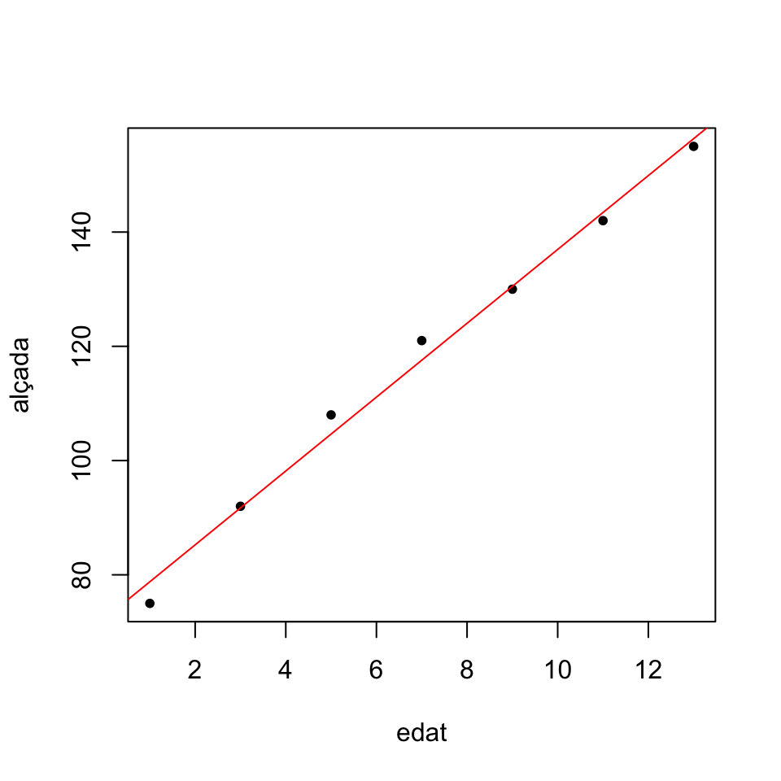
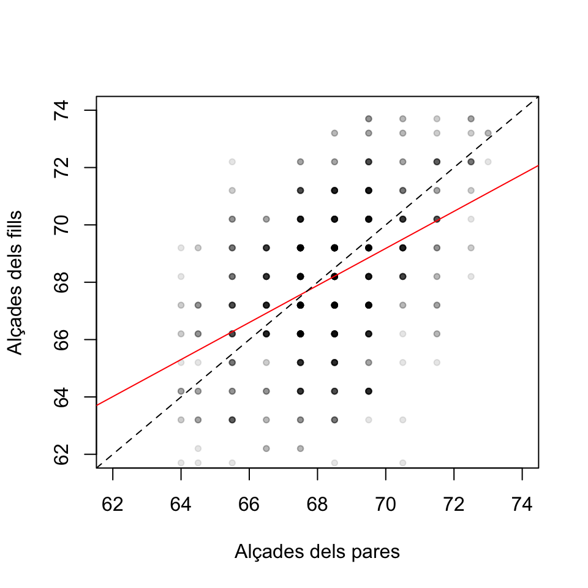
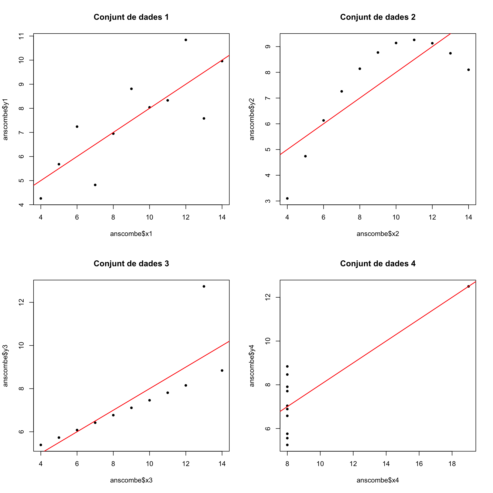

Tema 11 Regressió lineal
Comencem recordant un exemple de Matemàtiques I.
Exemple 11.1 La taula següent dóna l’alçada mitjana (en cm) dels nins a determinades edats (en anys):
| edat | alçada |
|---|---|
| 1 | 75 |
| 3 | 92 |
| 5 | 108 |
| 7 | 121 |
| 9 | 130 |
| 11 | 142 |
| 13 | 155 |
A Matemàtiques I aprenguéreu a calcular amb R la “millor” relació lineal \[ \text{alçada}= b_0+b_1\cdot\text{edat} \] de la manera següent:
edat=c(1,3,5,7,9,11,13)
alçada=c(75,92,108,121,130,142,155)
lm(alçada~edat)##
## Call:
## lm(formula = alçada ~ edat)
##
## Coefficients:
## (Intercept) edat
## 72.321 6.464Obteníeu d’aquesta manera la recta \[ \text{alçada}=72.321+6.464x \] i la representàveu amb:
plot(edat,alçada,pch=20)
abline(lm(alçada~edat),col="red",xlab="Edat",ylab="Alçada")
Ara podíeu emprar aquesta recta per estimar l’alçada d’un nin d’una edat concreta. Per exemple, ens permet estimar que l’alçada d’un nin d’10 anys és \[ 72.321+6.464\cdot 10=136.964, \] uns 137 cm.
En aquest tema estudiarem com es calcula aquella recta, què vol dir que sigui “la millor recta” que explica l’alçada dels nins en funció de l’edat, com trobar intervals de confiança per a les estimacions associades a aquesta recta i com tractar el problema més general de trobar “la millor funció lineal” que explica una variable \(Y\) en funció de diverses variables \(X_1,\ldots,X_k\).
11.1 Regressió lineal simple
El problema plantejat a l’Exemple 11.1 és una instància de la situació general en la qual tenim parelles d’observacions de dues variables \(X\) i \(Y\) sobre una mostra de \(n\geqslant 2\) subjectes, \[ (x_i,y_i)_{i=1,2,\ldots,n}, \] i volem estudiar com depèn el valor de la variable \(Y\) del de \(X\). En aquest context:
Direm que \(X\) és la variable de control o independent
Direm que \(Y\) l’anomenam la variable de resposta o dependent
En general, volem trobar la millor relació funcional (el millor model estadístic, amb la terminologia introduïda en el tema anterior) que expliqui la variable \(Y\) en funció de la variable \(X\). En aquest tema, cercarem un model lineal. Les tècniques que es fan servir per resoldre aquest problema s’anomenen genèricament de regressió lineal. Nosaltres n’estudiarem una de concreta: la regressió lineal per mínims quadrats.

11.1.1 El model
En el model de regressió lineal suposam que existeixen \(\beta_0,\beta_1\in \mathbb{R}\) tals que \[ \mu_{Y|x}=\beta_0+\beta_1 x \] on \(\mu_{Y|x}\) és el valor esperat de \(Y\) sobre els subjectes per als quals \(X\) val \(x\). Volem estimar aquests paràmetres \(\beta_0\) (el terme independent del model) i \(\beta_1\) (la pendent del model) a partir d’una mostra.
Recordau la interpretació d’una funció lineal \(y=a_0+a_1x\):
El terme independent \(a_0\) és el valor de \(y\) quan \(x=0\)
La pendent \(a_1\) és la variació de \(y\) quan \(x\) augmenta en 1 unitat
Per tant, en el nostre model de regressió lineal:
\(\beta_0\) és el valor esperat de \(Y\) en els subjectes en els quals \(X\) val 0
\(\beta_1\) és la variació del valor esperat de \(Y\) quan el valor de \(X\) augmenta 1 unitat
Amb una mostra \((x_i,y_i)_{i=1,2,\ldots,n}\), calcularem estimacions \(b_0\) i \(b_1\) de \(\beta_0\) i \(\beta_1\). Això ens donarà la recta de regressió per a la nostra mostra: \[ \widehat{Y}=b_0+b_1 X. \] Aquesta recta, donat un valor \(x_0\) de \(X\), permet estimar el valor \(\widehat{y}_0=b_0+b_1 x_0\) de \(Y\) sobre un subjecte en el qual \(X\) valgui \(x_0\). Hi empram \(\widehat{Y}\) a la dreta per posar èmfasi que no és que \(Y\) sigui \(b_0+b_1X\), sinó que això darrer estima el valor de \(Y\) a partir del valor de \(X\). En concret, si \(\widehat{y}_0=b_0+b_1 x_0\), direm a \(\widehat{y}_0\) el valor estimat de \(Y\) quan \(X=x_0\).
Fixau-vos que, d’aquesta manera, donada una observació \((x_i,y_i)\) de la nostra mostra, distingim entre
\(y_i\): el valor de \(Y\) sobre l’individu corresponent
\(\widehat{y}_i=b_0+b_1 x_i\): l’estimació del valor de \(Y\) sobre l’individu corresponent a partir del seu valor de \(X\) i la recta de regressió obtinguda
El model anterior el reescrivim com a \[ Y|x=\mu_{Y|x}+ E_x=\beta_0+\beta_1 x+ E_x \] on
\(Y|x\) és la variable aleatòria “valor de \(Y\) quan \(X\) val \(x\)”: Prenem un subjecte en el qual \(X\) val \(x\) i hi mesuram \(Y\)
\(\mu_{Y|x}\) és el valor esperat de \(Y|x\), és a dir, la mitjana dels valors de \(Y\) sobre tots els individus en els quals \(X\) valgui \(x\)
\(E_x=Y|x -\mu_{Y|x}\) és la variable aleatòria error o residu, que dóna la diferència entre el valor de \(Y\) en un individu amb \(X=x\) i el seu valor esperat
Prenent valors esperats als dos costats de la igualtat \(Y|x=\mu_{Y|x}+ E_x\) obtenim que \(\mu_{Y|x}=\mu_{Y|x}+ \mu_{E_x}\) i per tant que \(\mu_{E_x}=0\). Així doncs, aquest model implica que els valors esperats de les variables error \(E_x\) són tots 0.
11.1.2 Mínims quadrats
L’error que cometem amb l’estimació \(\widehat{y}_i=b_0+b_1x_i\) a cada observació \((x_i,y_i)\) de la mostra és \[ e_i=y_i-\widehat{y}_i=y_i-(b_0+b_1 x_i) \]
La Suma dels Quadrats dels Errors d’aquesta estimació és \[ SS_E=\sum_{i=1}^n e_i^2=\sum_{i=1}^n (y_i-b_0-b_1 x_i)^2 \] A la regressió lineal per mínims quadrats, s’estimen \(\beta_0\) i \(\beta_1\) per mitjà dels valors de \(b_0\) i \(b_1\) que minimitzen aquesta \(SS_E\). Aquests valors són donats pel resultat següent:
Per trobar-los, empram que els valors de \(b_0,b_1\) que fan mínim \[ SS_E=\sum_{i=1}^n (y_i-b_0-b_1 x_i)^2 \] anul·len les derivades de \(SS_E\) respecte de \(b_0\) i \(b_1\).
Derivem: \[ \begin{array}{l} \displaystyle\dfrac{\partial SS_E}{\partial b_0}=-2\sum\limits_{i=1}^n (y_i -b_0-b_1 x_i)\\[2ex] \displaystyle\dfrac{\partial SS_E}{\partial b_1}=-2\sum\limits_{i=1}^n (y_i -b_0-b_1 x_i) x_i \end{array} \] El \((b_0,b_1)\) que cercam satisfà \[ \begin{array}{l} \displaystyle 2\sum\limits_{i=1}^n (y_i -b_0-b_1 x_i)=0\\[2ex] \displaystyle 2\sum\limits_{i=1}^n (y_i -b_0-b_1 x_i) x_i =0 \end{array} \] Ho reescrivim: \[ \begin{array}{rl} \displaystyle n b_0 + \Big(\sum\limits_{i=1}^n x_i\Big) b_1 & =\sum\limits_{i=1}^n y_i\\[1ex] \displaystyle \Big(\sum\limits_{i=1}^n x_i\Big) b_0 + \Big(\sum\limits_{i=1}^n x_i^2\Big) b_1 &=\sum\limits_{i=1}^n x_iy_i \end{array} \] Les solucions són \[ \begin{array}{rl} b_1& \displaystyle=\frac{n \sum\limits_{i=1}^n x_i y_i-\sum\limits_{i=1}^n x_i\sum\limits_{i=1}^n y_i} {n\sum\limits_{i=1}^n x_i^2-\big(\sum\limits_{i=1}^n x_i\big)^2}\\[6ex] b_0& \displaystyle=\frac{\sum\limits_{i=1}^n y_i -b_1 \sum\limits_{i=1}^n x_i}{n} \end{array} \] i es pot comprovar que donen el mínim de \(SS_E\).
Ara, recordant que \[ \begin{array}{l} \displaystyle\overline{x}=\frac{1}{n}\sum\limits_{i=1}^n x_i, \quad \overline{y}=\frac{1}{n} \sum\limits_{i=1}^n y_i\\[2ex] \displaystyle s_x^2 =\frac{1}{n}\Big(\sum_{i=1}^n x_i^2\Big) -\overline{x}^2,\quad \displaystyle s_y^2 =\frac{1}{n}\Big(\sum_{i=1}^n y_i^2\Big) -\overline{y}^2\\[2ex] \displaystyle s_{xy} =\frac{1}{n}\Big(\sum_{i=1}^n x_i y_i\Big)-\overline{x}\cdot\overline{y} \end{array} \] s’obté finalment que \[ b_1 =\frac{{s}_{xy}}{{s}_x^2},\quad b_0 = \overline{y}-b_1 \overline{x} \]La igualtat \[ \frac{{s}_{xy}}{{s}_x^2}=\frac{\widetilde{s}_{xy}}{\widetilde{s}_x^2} \] és conseqüència que, a les dues fraccions, els denominadors del numerador i el denominador se cancel·len: \[ \frac{{s}_{xy}}{{s}_x^2}=\frac{\frac{\sum_{i=1}^n (x_i-\overline{x})(y_i-\overline{y})}{n}}{\frac{\sum_{i=1}^n (x_i-\overline{x})^2}{n}}=\frac{{\sum_{i=1}^n (x_i-\overline{x})(y_i-\overline{y})}}{{\sum_{i=1}^n (x_i-\overline{x})^2}}=\frac{\frac{\sum_{i=1}^n (x_i-\overline{x})(y_i-\overline{y})}{n-1}}{\frac{\sum_{i=1}^n (x_i-\overline{x})^2}{n-1}}= \frac{\widetilde{s}_{xy}}{\widetilde{s}_x^2} \]
Aquests \(b_0\) i \(b_1\) són els que calcula la funció lm.
Exemple 11.2 Calculem la recta de regressió per mínims quadrats de les edats i alçades de l’Exemple 11.1, que eren
| edat | alçada |
|---|---|
| 1 | 75 |
| 3 | 92 |
| 5 | 108 |
| 7 | 121 |
| 9 | 130 |
| 11 | 142 |
| 13 | 155 |
Començarem trobant els estadístics que ens calen per calcular els coeficients \(b_0\) i \(b_1\). Ja que hi som, també trobarem la variància de les alçades, que per calcular \(b_0\) i \(b_1\) no ens fa falta però que més tard sí que necessitarem saber-la:
edat=c(1,3,5, 7, 9, 11, 13)
alçada=c(75, 92, 108, 121, 130 , 142, 155)
x.b=mean(edat)
y.b=mean(alçada)
s2.x=var(edat)
s2.y=var(alçada)
s.xy=cov(edat,alçada)
round(c(x.b,y.b,s2.x,s2.y,s.xy),3)## [1] 7.000 117.571 18.667 786.952 120.667Obtenim
\[
\begin{array}{cccccccc}
\overline{x} & \overline{y} & \widetilde{s}_x^2 & \widetilde{s}_y^2 & \widetilde{s}_{xy}\\ \hline
7 & 117.571 & 18.667 & 786.952 & 120.667
\end{array}
\]
Aleshores
\[
\begin{array}{l}
\displaystyle b_1 =\frac{\widetilde{s}_{xy}}{\widetilde{s}_x^2}=\frac{120.667}{18.667}=6.464\\[2ex]
\displaystyle b_0 = \overline{y}-b_1 \overline{x} =117.571-6.464\cdot 7=72.321
\end{array}
\]
Trobam la recta de regressió
\[
\widehat{Y}=72.321+6.464 X
\]
que coincideix amb la recta que calcula lm:
lm(alçada~edat)##
## Call:
## lm(formula = alçada ~ edat)
##
## Coefficients:
## (Intercept) edat
## 72.321 6.464Els coeficients \(b_0,b_1\) s’obtenen, respectivament, afegint els sufixos $coefficients[1] i $coefficients[2] al resultat de la funció lm.
b0.edat=lm(alçada~edat)$coefficients[1]
b0.edat## (Intercept)
## 72.32143b1.edat=lm(alçada~edat)$coefficients[2]
b1.edat## edat
## 6.464286Segons aquesta estimació, l’alçada mitjana dels nins augmenta 6.46 cm anuals, partint d’una alçada mitjana de 72.3 cm en néixer.
Exemple 11.3 En un experiment on es volia estudiar l’associació entre el consum de sal i la tensió arterial, a alguns individus se’ls assignà aleatòriament una quantitat diària constant de sal en la seva dieta, i al cap d’un mes se’ls mesurà la tensió mitjana. Alguns resultats varen ser els següents:
| X (sal, en g) | Y (pressió, en mm de Hg) |
|---|---|
| 1.8 | 100 |
| 2.2 | 98 |
| 3.5 | 110 |
| 4.0 | 110 |
| 4.3 | 112 |
| 5.0 | 120 |
Volem trobar la recta de regressió lineal per mínims quadrats de \(Y\) en funció de \(X\) a partir d’aquesta mostra.
Calculem els estadístics que necessitam:
sal=c(1.8, 2.2,3.5,4.0,4.3,5.0)
tensió=c(100,98,110,110,112,120)
x.b=mean(sal)
y.b=mean(tensió)
s2.x=var(sal)
s2.y=var(tensió)
s.xy=cov(sal,tensió)
round(c(x.b,y.b,s2.x,s2.y,s.xy),3)## [1] 3.467 108.333 1.543 66.267 9.773\[ \begin{array}{ccccc} \overline{x} & \overline{y} & \widetilde{s}_x^2 & \widetilde{s}_y^2 & \widetilde{s}_{xy}\\ \hline 3.467 & 108.333 & 1.543 & 66.267 & 9.773 \end{array} \]
Per tant els coeficients de la recta de regressió lineal per mínims quadrats de \(Y\) (la tensió) en funció de \(X\) (la quantitat de sal) són
b1.sal=s.xy/s2.x
b0.sal=y.b-b1.sal*x.b
round(c(b0.sal,b1.sal),3)## [1] 86.371 6.335Obtenim la recta \[ \widehat{Y}= 86.371+6.335 X \] Segons aquest model, a un augment d’1 g de sal consumida li correspon un augment mitjà de 6.3 mm Hg de pressió arterial.
Així mateix, amb aquest model estimam, per exemple, que la pressió arterial d’una persona que consumeix 3 g diaris de sal és \[ 86.371+6.335 \cdot 3=105.377\text{ mm Hg} \]
Comprovem que aquesta és la recta que obtenim amb la funció lm:
lm(tensió~sal)$coefficients## (Intercept) sal
## 86.37079 6.33535Galton del paquet HistData.
library(HistData)
str(Galton)## 'data.frame': 928 obs. of 2 variables:
## $ parent: num 70.5 68.5 65.5 64.5 64 67.5 67.5 67.5 66.5 66.5 ...
## $ child : num 61.7 61.7 61.7 61.7 61.7 62.2 62.2 62.2 62.2 62.2 ...Cada filera del dataframe correspon a un adult: la variable child dóna la seva alçada i la variable parent la mitjana de les alçades dels seus pares, totes dues en polzades (recordau que 1 polzada són 2.54 cm). Calculem a mà i amb R la recta de regressió de la variable de resposta child en funció de la variable de control parent:
x.b=mean(Galton$parent)
y.b=mean(Galton$child)
s2.x=var(Galton$parent)
s2.y=var(Galton$child)
s.xy=cov(Galton$parent,Galton$child)
round(c(x.b,y.b,s2.x,s2.y,s.xy),3)## [1] 68.308 68.088 3.195 6.340 2.065\[ \begin{array}{ccccc} \overline{x} & \overline{y} & \widetilde{s}_x^2 & \widetilde{s}_y^2 & \widetilde{s}_{xy}\\ \hline 68.308 & 68.088 & 3.195 & 6.34 & 2.065 \end{array} \]
Per tant els coeficients de la recta de regressió lineal per mínims quadrats de \(Y\) (l’alçada dels fills) en funció de \(X\) (la mitjana de les alçades dels pares) són
b1.Galton=s.xy/s2.x
b0.Galton=y.b-b1.Galton*x.b
round(c(b0.Galton,b1.Galton),3)## [1] 23.942 0.646Obtenim la recta \[ \widehat{Y}= 23.942+0.646 X \] Segons aquest model, a un augment d’1 polzada (2.54 cm) en l’alçada mitjana dels pares li correspon, de mitjana, un augment de l’alçada del fill de només 0.646 polzades (1.6 cm).
Amb la funció lm obtenim la mateixa recta. Observau la sintaxi per especificar-hi el dataframe
lm(child~parent, data=Galton)$coefficients## (Intercept) parent
## 23.9415302 0.6462906El fet que la pendent d’aquesta recta sigui més petita que 1 és el que dóna l’efecte de “regressió a la mediocritat” que observà Galton. En efecte, calculem per a quines alçades mitjanes dels pares esperam que els fills siguin més baixos que ells. Si resolem la desigualtat “alçada dels pares més gran que l’alçada esperada dels fills” \[ X\geqslant \widehat{Y}= 23.942+0.646 X \] obtenim \[ X\geqslant \frac{23.942}{1-0.646}=67.69 \] i això ens diu que si l’alçada mitjana dels pares és més gran que 67.69 polzades, uns 1.72 m, esperam que els fills siguin més baixos que els pares, mentre que, pel contrari, si l’alçada mitjana dels pares està per davall dels 1.72 m, esperam que els fills siguin més alts que els pares.
Algunes de les propietats importants de la regressió per mínims quadrats són:
Tal i com hem calculat el terme independent \(b_0\), la recta de regressió passa pel punt mitjà \((\overline{x},\overline{y})\) de la mostra: \[ b_0+b_1 \overline{x}=\overline{y} \]
La mitjana dels valors estimats de la variable \(Y\) als nostres punts és igual a la mitjana dels valors observats: \[ \overline{\widehat{y}}=\frac{1}{n}\sum_{i=1}^n\widehat{y}_i =\frac{1}{n}\sum_{i=1}^n(b_0+b_1x_i)= b_0+b_1 \overline{x}=\overline{y} \]
Els errors \((e_i)_{i=1,\ldots,n}\) de la mostra tenen mitjana 0: \[ \begin{array}{l} \overline{e} & \displaystyle =\frac{1}{n}\sum_{i=1}^n e_i =\frac{1}{n}\sum_{i=1}^n (y_i-b_0-b_1x) =\frac{1}{n}\sum_{i=1}^n (y_i-\widehat{y}_i)\\[2ex] & \displaystyle =\frac{1}{n}\sum_{i=1}^n{y}_i-\frac{1}{n}\sum_{i=1}^n\widehat{y}_i= \overline{y}-\overline{\widehat{y}} =0 \end{array} \]
Els errors \((e_i)_{i=1,\ldots,n}\) de la mostra tenen variància \[ s_e^2=\frac{1}{n}\Big(\sum_{i=1}^{n} e^2_i\Big)-\overline{e}^2=\frac{\sum_{i=1}^{n} e^2_i}{n}=\frac{SS_E}{n} \] perquè \(\overline{e}=0\) (i recordau que hem dit a \(\sum_{i=1}^{n} e^2_i\) la Suma de Quadrats dels Errors,
\(SS_E\)).
El teorema següent recull les propietats de la regressió lineal per mínims quadrats com a tècnica d’estimació dels coeficients \(\beta_0\) i \(\beta_1\):
Teorema 11.2 Si les variables aleatòries error \(E_{x_i}\) tenen totes mitjana 0 i la mateixa variància \(\sigma^2_E\) i són, dues a dues, incorrelades, aleshores:
\(b_0\) i \(b_1\) són els estimadors lineals no esbiaixats més eficients (òptims) de \(\beta_0\) i \(\beta_1\)
Un estimador no esbiaixat de \(\sigma_E^2\) és \[ S^2=\frac{SS_E}{n-2} \]
Si a més les variables aleatòries error \(E_{x_i}\) són totes normals, aleshores:
- \(b_0\) i \(b_1\) són els estimadors màxim versemblants de \(\beta_0\) i \(\beta_1\) (a més de no esbiaixats òptims).
Exemple 11.5 Si suposam a l’Exemple 11.1 que els errors tenen la mateixa variància i són incorrelats, podem estimar aquesta variància de la manera següent:
n=length(edat)
alçada.cap=b0.edat+b1.edat*edat #Els valors estimats
errors.edat=alçada-alçada.cap #Els errors
SS.E=sum(errors.edat^2) #La suma dels quadrats dels errors
S2.edat=SS.E/(n-2) #L'estimació de la variància
S2.edat## [1] 8.314286Tenim que \(S^2=8.314\), i estimam que \(\sigma_E^2\) val això.
Bé, fins ara hem explicat com s’estimen per mínims quadrats els coeficients \(\beta_0\) i \(\beta_1\) al model \[ \mu_{Y|x}=\beta_0+\beta_1 x \] però ens pot interessar més:
Com és de significativa l’estimació obtinguda?
Quin és l’error típic d’aquests estimadors?
Quins serien els intervals de confiança d’aquests coeficients per a un nivell de confiança donat?
Com obtenim un interval de confiança per al valor estimat de \(Y\) sobre un subjecte a partir del seu valor de \(X\)?
Amb la funció lm, R calcula molt més que els coeficients de la recta:
summary(lm(alçada~edat))##
## Call:
## lm(formula = alçada ~ edat)
##
## Residuals:
## 1 2 3 4 5 6 7
## -3.7857 0.2857 3.3571 3.4286 -0.5000 -1.4286 -1.3571
##
## Coefficients:
## Estimate Std. Error t value Pr(>|t|)
## (Intercept) 72.3214 2.1966 32.92 4.86e-07 ***
## edat 6.4643 0.2725 23.73 2.48e-06 ***
## ---
## Signif. codes: 0 '***' 0.001 '**' 0.01 '*' 0.05 '.' 0.1 ' ' 1
##
## Residual standard error: 2.883 on 5 degrees of freedom
## Multiple R-squared: 0.9912, Adjusted R-squared: 0.9894
## F-statistic: 562.9 on 1 and 5 DF, p-value: 2.477e-06Veurem què és tot això que ens dóna R i per què serveix.
D’entrada, pot ser útil saber que el vector Residuals (que s’obté amb el sufix $residuals) conté el vector dels errors \((e_i)_i\). Comprovem-ho amb les dades de l’Exemple 11.1, els residus de les quals hem calculat a l’Exemple 11.5:
errors.edat## [1] -3.7857143 0.2857143 3.3571429 3.4285714 -0.5000000 -1.4285714 -1.3571429summary(lm(alçada~edat))$residuals## 1 2 3 4 5 6 7
## -3.7857143 0.2857143 3.3571429 3.4285714 -0.5000000 -1.4285714 -1.357142911.1.3 Coeficient de determinació
Una primera pregunta que ens hem de fer és si la recta de regressió lineal que hem obtingut s’ajusta bé a la mostra obtinguda. Amb un enfocament proper al de l’ANOVA,
Consideram que la recta de regressió \(\widehat{Y}=b_0+b_1X\) ens dóna una bona aproximació de \(Y\) com a funció lineal de \(X\) sobre la nostra mostra quan la variabilitat dels valors estimats \(\widehat{y}_i\) representa una fracció molt gran de la variabilitat dels valors observats \(y_i\).
Això es quantifica amb el coeficient de determinació \(R^2\) que tot seguit definim.
Siguin:
\(SS_{Tot} =\sum\limits_{i=1}^n(y_i-\overline{y})^2\): és la Suma Total de Quadrats i representa la variabilitat dels valors observats \(y_i\). Fixau-vos que \[ SS_{Tot}=n\cdot s_y^2 \]
\(SS_R=\sum\limits_{i=1}^n(\widehat{y}_i-\overline{y})^2\): és la Suma de Quadrats de la Regressió i representa la variabilitat dels valors estimats \(\widehat{y}_i\). Fixau-vos que \[ SS_R=n\cdot s_{\widehat{y}}^2 \]
Considerarem que la recta \(\widehat{y}=b_0+b_1x\) és una bona aproximació de \(Y\) com a funció lineal de \(X\) sobre la nostra mostra quan \(s^2_{\widehat{y}}\) sigui molt proper a \(s^2_y\). Per mesurar-ho, emprarem el coeficient de determinació \(R^2\), que és simplement el seu quocient: \[ R^2=\frac{SS_R}{SS_{Tot}}=\frac{s_{\widehat{y}}^2}{s_y^2} \]
Recordau ara que hem definit la Suma de Quadrats dels Errors \(SS_E=\sum\limits_{i=1}^n(y_i-\widehat{y}_i)^2\) i que \[ SS_E=n\cdot s_e^2 \] on \(s_e^2\) és la variància dels errors. A la regressió lineal per mínims quadrats s’hi satisfà la identitat de les sumes de quadrats següent:
Exemple 11.6 Comprovem aquesta igualtat amb les dades de l’Exemple 11.1:
SS.Tot=sum((alçada-mean(alçada))^2)
SS.R=sum((alçada.cap-mean(alçada))^2)
SS.E=sum(errors.edat^2)
c(SS.Tot,SS.R,SS.E)## [1] 4721.71429 4680.14286 41.57143SS.R+SS.E## [1] 4721.714Així, doncs, a la regressió per mínims quadrats
la variabilitat dels valors observats \(y_i\) de \(Y\) és igual a la suma de la variabilitat dels valors estimats \(\widehat{y}_i\) de \(Y\) més la variabilitat dels errors.
Aleshores, si la regressió lineal és per mínims quadrats, \[ R^2=\frac{SS_R}{SS_{Tot}}=\frac{SS_{Tot}-SS_E}{SS_{Tot}}=1-\frac{SS_E}{SS_{Tot}}=1-\frac{s_e^2}{s_y^2} \] En particular:
R dóna el \(R^2\) en el summary(lm( )): és el valor Multiple R-squared a la penúltima línia de la seva sortida:
summary(lm(alçada~edat))##
## Call:
## lm(formula = alçada ~ edat)
##
## Residuals:
## 1 2 3 4 5 6 7
## -3.7857 0.2857 3.3571 3.4286 -0.5000 -1.4286 -1.3571
##
## Coefficients:
## Estimate Std. Error t value Pr(>|t|)
## (Intercept) 72.3214 2.1966 32.92 4.86e-07 ***
## edat 6.4643 0.2725 23.73 2.48e-06 ***
## ---
## Signif. codes: 0 '***' 0.001 '**' 0.01 '*' 0.05 '.' 0.1 ' ' 1
##
## Residual standard error: 2.883 on 5 degrees of freedom
## Multiple R-squared: 0.9912, Adjusted R-squared: 0.9894
## F-statistic: 562.9 on 1 and 5 DF, p-value: 2.477e-06S’obté directament del summary(lm( )) amb el sufix $r.squared
summary(lm(alçada~edat))$r.squared## [1] 0.9911957El resultat següent ja l’anunciàrem al Tema ??.
En efecte: \[ \begin{array}{rl} R^2 & \displaystyle =\frac{SS_R}{SS_{Tot}}=\frac{\sum\limits_{i=1}^n(b_1x_i+b_0-\overline{y})^2}{ns_y^2}\\[2ex] & \displaystyle =\frac{\sum\limits_{i=1}^n\Big(\dfrac{s_{xy}}{s_x^2}x_i-\dfrac{s_{xy}}{s_x^2}\overline{x}\Big)^2}{ns_y^2} =\frac{\dfrac{s_{xy}^2}{s_x^4}\sum\limits_{i=1}^n(x_i-\overline{x})^2}{ns_y^2}\\[2ex] & \displaystyle =\dfrac{s_{xy}^2}{s_x^4}\cdot \frac{s_x^2}{s_y^2}=\frac{s_{xy}^2}{s_x^2\cdot s_y^2}=r_{xy}^2 \end{array} \]
Exemple 11.7 Comprovem-ho a l’Exemple 11.1:
summary(lm(alçada~edat))$r.squared## [1] 0.9911957cor(edat,alçada)^2## [1] 0.9911957Exemple 11.8 Comprovem ara la identitat de les sumes de quadrats i la igualtat \(R^2=r^2\) a l’Exemple 11.3:
tensió.cap=b0.sal+b1.sal*sal #Els valors estimats
SS.Tot=sum((tensió-mean(tensió))^2) #La Suma Total de Quadrats
SS.Tot## [1] 331.3333SS.R=sum((tensió.cap-mean(tensió))^2) #La Suma de Quadrats de la Regressió
SS.R## [1] 309.5874SS.E=sum((tensió-tensió.cap)^2) #La suma de Quadrats dels Errors
SS.E## [1] 21.74589Vegem que \(SS_R+SS_E\) és igual a \(SS_{Tot}\):
SS.R+SS.E## [1] 331.3333Calculem ara \(R^2=SS_R/SS_{Tot}\) i comprovem que coincideix amb el valor que dóna R i amb el quadrat de la correlació de Pearson de les mostres de quantitats de sal i tensions:
R2=SS.R/SS.Tot
R2## [1] 0.9343685summary(lm(tensió~sal))$r.squared## [1] 0.9343685cor(sal,tensió)^2## [1] 0.9343685var(y)) i \(r_{x,y}\) (cor(x,y)), llavors
\[
r_{x,y}^2=R^2=1-\frac{s_e^2}{s_y^2}\Longrightarrow s_e^2=s_y^2(1-r_{x,y}^2)
\]
i per tant podeu calcular la \(S^2\) que estima la variància comuna dels errors \(E_{x_i}\) de la manera següent:
\[
S^2=\frac{SS_E}{n-2}=\frac{n s_e^2}{n-2}=\frac{ns_y^2(1-r_{x,y}^2)}{n-2}=\frac{(n-1)\widetilde{s}_y^2(1-r_{x,y}^2)}{n-2}
\]
Això us pot ser útil als exercicis.
Un exemple clàssic de les mancances del \(R^2\) són els quatre conjunts de dades \((x_{1,i},y_{1,i})_{i=1,\ldots,11}\), \((x_{2,i},y_{2,i})_{i=1,\ldots,11}\), \((x_{3,i},y_{3,i})_{i=1,\ldots,11}\), \((x_{4,i},y_{4,i})_{i=1,\ldots,11}\) que formen el dataframe anscombe de R i que ja empràrem al Tema ??:
str(anscombe)## 'data.frame': 11 obs. of 8 variables:
## $ x1: num 10 8 13 9 11 14 6 4 12 7 ...
## $ x2: num 10 8 13 9 11 14 6 4 12 7 ...
## $ x3: num 10 8 13 9 11 14 6 4 12 7 ...
## $ x4: num 8 8 8 8 8 8 8 19 8 8 ...
## $ y1: num 8.04 6.95 7.58 8.81 8.33 ...
## $ y2: num 9.14 8.14 8.74 8.77 9.26 8.1 6.13 3.1 9.13 7.26 ...
## $ y3: num 7.46 6.77 12.74 7.11 7.81 ...
## $ y4: num 6.58 5.76 7.71 8.84 8.47 7.04 5.25 12.5 5.56 7.91 ...Les rectes de regressió per mínims quadrats dels quatre conjunts de dades són gairebé iguals i donen valors de \(R^2\) molt semblants:
lm(y1~x1,data=anscombe)$coefficients## (Intercept) x1
## 3.0000909 0.5000909summary(lm(y1~x1,data=anscombe))$r.squared## [1] 0.6665425lm(y2~x2,data=anscombe)$coefficients## (Intercept) x2
## 3.000909 0.500000summary(lm(y2~x2,data=anscombe))$r.squared## [1] 0.666242lm(y3~x3,data=anscombe)$coefficients## (Intercept) x3
## 3.0024545 0.4997273summary(lm(y3~x3,data=anscombe))$r.squared## [1] 0.666324lm(y4~x4,data=anscombe)$coefficients## (Intercept) x4
## 3.0017273 0.4999091summary(lm(y4~x4,data=anscombe))$r.squared## [1] 0.6667073Però si els dibuixam veureu que els seus ajusts a la recta de regressió són molt diferents:
par(mfrow=c(2,2))
plot(anscombe$x1,anscombe$y1,main="Conjunt de dades 1",pch=20)
abline(lm(y1~x1,data=anscombe),col="red",lwd=1.5)
plot(anscombe$x2,anscombe$y2,data=anscombe,main="Conjunt de dades 2",pch=20)
abline(lm(y2~x2,data=anscombe),col="red",lwd=1.5)
plot(anscombe$x3,anscombe$y3,main="Conjunt de dades 3",pch=20)
abline(lm(y3~x3,data=anscombe),col="red",lwd=1.5)
plot(anscombe$x4,anscombe$y4,main="Conjunt de dades 4",pch=20)
abline(lm(y4~x4,data=anscombe),col="red",lwd=1.5)
datasaure=read.table("https://raw.githubusercontent.com/AprendeR-UIB/MatesII/master/Dades/Datasaurus.txt",header=TRUE,sep="\t")
dino=datasaure[datasaure$dataset=="dino",2:3]
star=datasaure[datasaure$dataset=="star",2:3]
lm(dino$y~dino$x)$coefficients## (Intercept) dino$x
## 53.3353196 -0.1011268summary(lm(dino$y~dino$x))$r.squared## [1] 0.0039641lm(star$y~star$x)$coefficients## (Intercept) star$x
## 53.326679 -0.101113summary(lm(star$y~star$x))$r.squared## [1] 0.003964111.1.4 Intervals de confiança dels coeficients
Suposarem d’ara endavant que cada \(E_{x_i}\) segueix una distribució normal amb mitjana \(\mu_{E_{x_i}}=0\) i totes amb la mateixa variància \(\sigma_E^2\), i que \(\sigma_{E_{x_i},E_{x_j}}=0\) per a cada parella \(i,j\). Recordau que sota aquestes condicions, els estimadors per mínims quadrats \(b_0\) i \(b_1\) de \(\beta_0\) i \(\beta_1\) són màxim versemblants i no esbiaixats òptims.
Si tenim molt pocs valors \(y\) per a cada \(x\) a la mostra, això no es pot contrastar amb un mínim raonable de potència, però si és veritat, implica que els \((e_i)_{i=1,\ldots,n}\) s’ajusten a una variable \(N(0,\sigma_E^2)\), amb \(\sigma_E^2\) estimada per \(S^2\), i això sí que ho podem contrastar. Si ho podem rebutjar, hem de rebutjar que els \(E_{x_i}\) satisfan les condicions requerides.
Exemple 11.9 A l’Exemple 11.2:
SS.E.edat=sum(errors.edat^2)
S2.edat=SS.E.edat/(length(edat)-2) #L'estimació de la variància comuna dels errors
ks.test(errors.edat,"pnorm",0,sqrt(S2.edat))##
## One-sample Kolmogorov-Smirnov test
##
## data: errors.edat
## D = 0.17482, p-value = 0.958
## alternative hypothesis: two-sidedPodem acceptar que els errors s’ajusten a una variable normal de mitjana 0.
Exemple 11.10 A l’Exemple 11.3:
errors.sal=summary(lm(tensió~sal))$residuals
SS.E.sal=sum(errors.sal^2)
S2.sal=SS.E.sal/(length(sal)-2)
ks.test(errors.sal,"pnorm",0,sqrt(S2.sal))##
## One-sample Kolmogorov-Smirnov test
##
## data: errors.sal
## D = 0.25544, p-value = 0.7472
## alternative hypothesis: two-sidedTambé podem acceptar que els errors s’ajusten a una variable normal de mitjana 0.
Per cert, R calcula la \(S\), l’arrel quadrada d’aquesta \(S^2\), en fer la lm. És el Residual standard error de la tercera línia començant per avall a la sortida del summary(lm( )) i s’obté amb el sufix $sigma:
summary(lm(tensió~sal))##
## Call:
## lm(formula = tensió ~ sal)
##
## Residuals:
## 1 2 3 4 5 6
## 2.226 -2.309 1.455 -1.712 -1.613 1.952
##
## Coefficients:
## Estimate Std. Error t value Pr(>|t|)
## (Intercept) 86.3708 3.0621 28.206 9.4e-06 ***
## sal 6.3354 0.8395 7.546 0.00165 **
## ---
## Signif. codes: 0 '***' 0.001 '**' 0.01 '*' 0.05 '.' 0.1 ' ' 1
##
## Residual standard error: 2.332 on 4 degrees of freedom
## Multiple R-squared: 0.9344, Adjusted R-squared: 0.918
## F-statistic: 56.95 on 1 and 4 DF, p-value: 0.001652summary(lm(tensió~sal))$sigma## [1] 2.331625sqrt(S2.sal)## [1] 2.331625Resulta que si se satisfan les condicions demanades sobre les variables \(E_{x_i}\), aleshores coneixem els errors típics dels estimadors \(b_1\) i \(b_0\) i uns estadístics associats a aquests estimadors segueixen lleis t de Student que permeten calcular intervals de confiança per a \(\beta_0\) i \(\beta_1\). En concret:
Pel que fa a \(b_1\),
- El seu error típic és \[ \frac{\sigma_E}{s_x\sqrt{n}}. \]
- L’estimació d’aquest error típic sobre una mostra concreta és \[ \frac{S}{s_x\sqrt{n}} \]
- La fracció \[ T_1=\frac{b_1-\beta_1}{\frac{S}{s_x\sqrt{n}}} \] segueix una llei \(t\) de Student amb \(n-2\) graus de llibertat.
Observau que l’error típic de \(b_1\):
Decreix amb \(n\): com més gran és la mostra, menys incertesa esperam en l’estimació de \(\beta_1\). Això ens ha passat en totes les estimacions del curs, no és cap sorpresa. En general, com més dades tenim, millor.
Decreix amb \(s_x\): com més dispersa és la mostra, menys incertesa esperam en l’estimació de \(\beta_1\). Això és una novetat, en altres casos (per exemple, en estimar una mitjana) la incertesa creixia amb la desviació típica de la mostra. Però aquí és raonable. Pensau en termes físics: si voleu unir dos punts amb una recta, com és més fàcil que aquesta recta sigui estable, si els dos punts estan molt junts o si estan separats? Separats, no?
Creix amb \(\sigma_E\): com més variabilitat tenguin els errors residuals, més incertesa tendrem. Fixau-vos que si \(\sigma_E=0\), aleshores no hi ha gens d’incertesa: significa que els punts \((x_i,y_i)\) estan sobre una recta i aquesta recta és la de regressió.
Pel que fa a \(b_0\),
- El seu error típic és \[ \frac{\sigma_E\sqrt{s_x^2+\overline{x}^2}}{s_x\sqrt{n}} \]
- L’estimació d’aquest error típic sobre una mostra concreta és \[ \frac{S\sqrt{s_x^2+\overline{x}^2}}{s_x\sqrt{n}} \]
- La fracció \[ T_0=\frac{b_0-\beta_0}{\frac{S\sqrt{s_x^2+\overline{x}^2}}{s_x\sqrt{n}}} \] també segueix una llei \(t\) de Student amb \(n-2\) graus de llibertat.
Com que els estadístics \(T_1\) i \(T_0\) tenen distribucions t de Student, operant amb ells com en el cas de l’interval de confiança per a la mitjana poblacional \(\mu\) obtenim fórmules per als intervals de confiança per a \(\beta_1\) i \(\beta_1\) de la forma que ens agrada: \[ \text{estimador}\pm \text{quantil}\times \text{error típic} \]
En concret, sota les hipòtesis imposades al principi d’aquesta secció
Un interval de confiança amb nivell de confiança \(q\) per a \(\beta_1\) és \[ b_1\pm t_{n-2,(1+q)/2}\cdot \frac{S}{s_x\sqrt{n}} \]
Un interval de confiança amb nivell de confiança \(q\) per a \(\beta_0\) és \[ b_0\pm t_{n-2,(1+q)/2}\cdot \frac{S\sqrt{s_x^2+\overline{x}^2}}{s_x\sqrt{n}} \]
Exemple 11.11 Tornem a l’Exemple 11.1. Hi havíem obtingut la recta de regressió
\[ \widehat{Y}=72.321+6.464X \] i a més \(n=7\) i havíem calculat que \(\overline{x}=7\), \(s_x^2=18.667\) i \(S^2=3.624\).
Aleshores:
Un interval de confiança al 95% per \(\beta_1\) és \[ \begin{array}{l} \displaystyle b_1\pm t_{n-2,(1+0.95)/2}\cdot \frac{S}{s_x\sqrt{n}} =6.464\pm t_{5,0.975}\cdot \frac{\sqrt{8.314}}{4\sqrt{7}}\\[2ex] \qquad = 6.464\pm 2.5706 \cdot 0.2724=6.464\pm 0.7 \end{array} \] Obtenim l’interval \([5.764,7.164]\).
Un interval de confiança al 95% per a \(\beta_0\) és \[ \begin{array}{l} \displaystyle b_0\pm t_{n-2,(1+0.95)/2}\cdot\frac{S\sqrt{s_x^2+\overline{x}^2}}{s_x\sqrt{n}} =72.321\pm t_{5,0.975}\cdot \frac{\sqrt{8.314}\cdot\sqrt{16+7^2}}{4\sqrt{7}}\\[2ex] \qquad = 72.321\pm 2.5706 \cdot 2.1966=72.321\pm 5.647 \end{array} \] Obtenim l’interval \([66.674,77.968]\).
Amb R aquests intervals de confiança s’obtenen amb la funció confint aplicada al resultat de la lm. El nivell de confiança s’hi indica amb el paràmetre level i el seu valor per defecte és, com sempre, 0.95.
confint(lm(alçada~edat),level=0.95)## 2.5 % 97.5 %
## (Intercept) 66.674769 77.968088
## edat 5.763904 7.164668confint(lm(tensió~sal))## 2.5 % 97.5 %
## (Intercept) 77.869064 94.872509
## sal 4.004434 8.66626611.1.5 Intervals de confiança per a les estimacions de la variable dependent
També podem calcular intervals de confiança per al valor estimat de la \(Y\) sobre els individus amb un valor de \(X\) donat. En aquest cas, tenim dos intervals:
L’interval per al valor esperat \(\mu_{Y|x_0}\) de \(Y\) sobre els individus en els que \(X\) val \(x_0\), és a dir, per al valor mitjà de la \(Y\) sobre tots els individus de la població en els que \(X\) valgui \(x_0\).
L’interval per al valor predit \(y_0\) de \(Y\) sobre un individu concret en el que \(X\) valgui \(x_0\).
Tot i que tant el valor esperat \(\mu_{Y|x_0}\) com el valor \(y_0\) de \(Y\) sobre un individu concret en el que \(X\) valgui \(x_0\) tenen el mateix valor estimat, \[ \widehat{y}_0=b_0+b_1x_0, \] l’interval de confiança del valor esperat serà més estret que el del valor sobre un individu concret. Això reflecteix el fet que, naturalment, hi ha molta més incertesa en saber què val la \(Y\) sobre un individu concret que en saber quin és el valor mitjà de \(Y\) sobre tots els individus que tenguin el mateix valor de \(X\) que aquest individu concret.
Bé passem a les fórmules. Sota les condicions sobre els errors que hem suposat al començament de la secció anterior (variables error normals de mitjana 0 i mateixa desviació típica, i incorrelades dues a dues):
L’error típic de \(\widehat{y}_0\) com a estimador de \(\mu_{Y|x_0}\) és \[ \sigma_E\cdot \sqrt{\frac{1}{n}+\frac{(x_0-\overline{x})^2}{ns^2_x}} \] i la fracció \[ \frac{\widehat{y}_0-\mu_{Y/x_0}}{S\cdot \sqrt{\frac{1}{n}+\frac{(x_0-\overline{x})^2}{n s^2_x}}} \] segueix una llei \(t\) de Student amb \(n-2\) graus de llibertat.
L’error típic de \(\widehat{y}_0\) com a estimador de \(y_0\) és \[ \sigma_E\cdot \sqrt{1+\frac{1}{n}+\frac{(x_0-\overline{x})^2}{ns^2_x}} \] i la fracció \[ \frac{\widehat{y}_0-y_0}{S\cdot \sqrt{1+\frac{1}{n}+\frac{(x_0-\overline{x})^2}{n s^2_x}}} \] segueix una llei \(t\) de Student amb \(n-2\) graus de llibertat.
Per tant, sota aquestes hipòtesis,
Un interval de confiança de nivell de confiança \(q\) per a \(\mu_{Y|x_0}\) és \[ \widehat{y}_0\pm t_{n-2,(1+q)/2}\cdot S\cdot \sqrt{\frac{1}{n}+\frac{(x_0-\overline{x})^2}{n s^2_x}} \]
Un interval de confiança de nivell de confiança \(q\) per a \(y_0\) és \[ \widehat{y}_0\pm t_{n-2,(1+q)/2}\cdot S\cdot \sqrt{1+\frac{1}{n}+\frac{(x_0-\overline{x})^2}{n s^2_x}} \]
Exemple 11.12 Tornem una altra vegada a l’Exemple 11.1. Hi havíem obtingut la recta de regressió
\[ \widehat{Y}=72.321+6.464X \] i a més \(n=7\) i havíem calculat que \(\overline{x}=7\), \(s_x^2=18.667\) i \(S^2=3.624\).
Suposem que volem estimar l’alçada \(y_0\) d’un nin de \(x_0=10\) anys. L’estimació amb la recta de regressió és \[ \widehat{y}_0=72.321+6.464\cdot 10=136.964 \]
Ara volem saber els intervals de confiança del 95% per a aquesta estimació:
Un interval de confiança del 95% per a \(y_0\) és \[ \begin{array}{l} \displaystyle \widehat{y}_0\pm t_{n-2,(1+0.95)/2}\cdot S\sqrt{1+\frac{1}{n}+\frac{(x_0-\overline{x})^2}{ns^2_x}} \\[2ex] \displaystyle\qquad=136.961\pm t_{5,0.975}\cdot \sqrt{8.314}\cdot\sqrt{1+\frac{1}{7}+\frac{(10-7)^2}{7\cdot 16 }}\\[2ex] \qquad = 136.961\pm 2.5706 \cdot 3.189=136.961\pm 8.198 \end{array} \] Obtenim l’interval \([128.8,145.2]\). Per tant, estam molt segurs que si prenem un nin d’10 anys, la seva alçada estarà entre els 128.8 cm i els 145.2 cm.
Un interval de confiança del 95% per al valor esperat \(\mu_{Y|x_0}\) de \(y_0\) és \[ \begin{array}{l} \displaystyle \widehat{y}_0\pm t_{n-2,(1+0.95)/2}\cdot S\sqrt{\frac{1}{n}+\frac{(x_0-\overline{x})^2}{ns^2_x}} \\[2ex] \displaystyle\qquad=136.961\pm t_{5,0.975}\cdot \sqrt{8.314}\cdot\sqrt{\frac{1}{7}+\frac{(10-7)^2}{7\cdot 16 }}\\[2ex] \qquad = 136.961\pm 2.5706 \cdot 1.362=136.961\pm 3.501 \end{array} \] Obtenim l’interval \([133.5, 140.5]\). Per tant, estam molt segurs que l’alçada mitjana dels nins d’10 anys està entre els 133.5 cm i els 140.5 cm.
Si en canvi volguéssim emprar aquesta recta per estimar l’alçada d’un nin d’15 anys, els intervals que obtenim són (comprovau-ho):
Per a \(y_0\), \([159.6, 179]\)
Per a \(\mu_{Y|x_0}\), \([163, 175.6]\)
Com veieu, són molt més amples que els intervals de confiança per als 10 anys.
Amb R, aquests intervals es calculen amb la funció predict.lm aplicada a
el resultat de la
lmun data frame amb el valor (o els valors, si ho volem fer de cop per a més d’un valor) de \(X\)
el paràmetre
intervaligualat al tipus d’interval que volem:"prediction"si és per al valor en un individu,"confidence"si és per al valor esperat
A més, s’hi pot entrar el nivell de significació amb el paràmetre level; si és 0.95, no cal. El resultat és un dataframe amb tres columnes: fit, el valor predit, i lwr i upr, els extrems inferior i superior de l’interval.
En el nostre exemple, primer hem de definir un data frame amb l’edat o les edats. Calcularem els intervals de confiança per als 10 i 15 anys. Per tant, definim un data frame format per dues observacions de la variable edat, que valguin 10 i 15:
nin=data.frame(edat=c(10,15))Aleshores, els intervals de confiança del 95% per a les alçades d’un nin d’10 anys i d’un nin d’15 anys són, respectivament,
predict.lm(lm(alçada~edat),nin,interval="prediction")## fit lwr upr
## 1 136.9643 128.7665 145.1620
## 2 169.2857 159.5809 178.9905i els intervals de confiança del 95% per a les alçades mitjanes dels nins d’10 i d’15 anys són, respectivament,
predict.lm(lm(alçada~edat),nin,interval="confidence")## fit lwr upr
## 1 136.9643 133.4624 140.4662
## 2 169.2857 163.0213 175.550111.1.6 Té sentit una regressió lineal?
Si \(\beta_1=0\), el model de regressió lineal no té sentit, perquè en aquest cas \[ Y|x=\beta_0+E_x \] i les variacions en els valors de \(Y\) es deuen tan sols als errors aleatoris.
El contrast \[ \left\{\begin{array}{l} H_0:\beta_1=0\\ H_1:\beta_1 \neq 0 \end{array} \right. \] el podem realitzar amb l’interval de confiança per a \(\beta_1\): si 0 no hi pertany, rebutjam la hipòtesi nul·la amb el nivell de significació corresponent al nivell de confiança de l’interval.
Per exemple, a l’Exemple 11.11 hem obtingut l’IC 95% per a \(\beta_1\) \([5.764,7.164]\). Com que no conté el 0, concloem (amb un nivell de significació de 0.05) que \(\beta_1\neq 0\).
Si mirau la sortida del summary(lm( ))
summary(lm(alçada~edat))##
## Call:
## lm(formula = alçada ~ edat)
##
## Residuals:
## 1 2 3 4 5 6 7
## -3.7857 0.2857 3.3571 3.4286 -0.5000 -1.4286 -1.3571
##
## Coefficients:
## Estimate Std. Error t value Pr(>|t|)
## (Intercept) 72.3214 2.1966 32.92 4.86e-07 ***
## edat 6.4643 0.2725 23.73 2.48e-06 ***
## ---
## Signif. codes: 0 '***' 0.001 '**' 0.01 '*' 0.05 '.' 0.1 ' ' 1
##
## Residual standard error: 2.883 on 5 degrees of freedom
## Multiple R-squared: 0.9912, Adjusted R-squared: 0.9894
## F-statistic: 562.9 on 1 and 5 DF, p-value: 2.477e-06a la matriu Coefficients:
Els
Estimatesón les estimacions \(b_0\) i \(b_1\)Els
Std. Errorsón (les estimacions de) els seus errors típicsEls
t valuesón els valors dels estadístics de contrast dels contrastos bilaterals amb hipòtesi nul·la \(H_0:\) “coeficient \(=0\)”; aquests estadístics de contrast són justament els estadístics \(T_0\) i \(T_1\) que hem definit fa una estona (substituint-hi \(\beta_0\) i \(\beta_1\) pels valors que contrastam, 0)Els
Pr(>|t|)són els p-valors d’aquests contrastos (que no us engani la notació, aquests p-valors es defineixen com toca: \[ 2P(t_{n-2}\geqslant |T_0|),\quad 2P(t_{n-2}\geqslant |T_1|) \] respectivament).Com veiem, en aquest cas podem rebutjar amb \(\alpha=0.05\) que \(\beta_1=0\) (i també que \(\beta_0=0\)).
11.2 Regressió lineal múltiple
Comencem amb un exemple.
Exemple 11.13 Es postula que l’alçada esperada d’un nadó en cm (\(Y\)) té una relació lineal amb la seva edat en dies (\(X_1\)), la seva alçada en néixer en cm (\(X_2\)), el seu pes en kg en néixer (\(X_3\)) i l’augment en tant per cent del seu pes actual respecte del seu pes en néixer (\(X_4\)). És a dir, es creu que existeixen coeficients \(\beta_0,\ldots,\beta_4\in \mathbb{R}\) tals que el model \[ \mu_{Y|x_1,x_2,x_3,x_4}=\beta_0+\beta_1x_1+\beta_2x_2+\beta_3x_3+\beta_4x_4 \] és correcte, on \(\mu_{Y|x_1,x_2,x_3,x_4}\) és l’alçada esperada, en cm, d’un nadó de \(x_1\) dies que en néixer va fer \(x_2\) cm i \(x_3\) kg i des de llavors el seu pes ha augmentat un \(x_4\)%. En una mostra de \(n=9\) nins, els resultats varen ser els de la taula següent:
| Alçada (en cm) | Edat (en dies) | Alçada en néixer (en cm) | Pes en néixer (en kg) | % d’increment de pes |
|---|---|---|---|---|
| 57.5 | 78 | 8.2 | 2.75 | 29.5 |
| 52.8 | 69 | 45.5 | 2.15 | 26.3 |
| 61.3 | 77 | 46.3 | 4.41 | 32.2 |
| 67.0 | 88 | 49.0 | 5.52 | 36.5 |
| 53.5 | 67 | 43.0 | 3.21 | 27.2 |
| 62.7 | 80 | 48.0 | 4.32 | 27.7 |
| 56.2 | 74 | 48.0 | 2.31 | 28.3 |
| 68.5 | 94 | 53.0 | 4.30 | 30.3 |
| 79.2 | 102 | 58.0 | 3.71 | 28.7 |
A partir d’aquesta mostra, volem estimar els coeficients \(\beta_0,\ldots,\beta_4\in \mathbb{R}\) de la relació lineal predita.
Aquest és un problema de regressió lineal múltiple. Ara tenim \(k\) variables independents, o de control \(X_1,\ldots, X_k\) (com al cas simple, no necessàriament aleatòries) i una variable aleatòria dependent, o de resposta, \(Y\). Suposam que el model \[ \mu_{Y|x_1,\ldots,x_k}= \beta_0+\beta_1 x_1+\cdots+\beta_k x_k \] o, equivalentment, \[ Y|x_1,\ldots,x_k=\beta_0+\beta_1 x_{1}+\cdots+\beta_{k} x_k+E_{x_1,\ldots,x_k} \] és correcte, on:
\(Y|x_1,\ldots,x_k\) és la variable aleatòria que dóna el valor de \(Y\) sobre individus en els quals \(X_i=x_i\) per a cada \(i=1,\ldots,k\)
\(\mu_{Y|x_1,\ldots,x_k}\) és el valor esperat de \(Y|x_1,\ldots,x_k\), és a dir, la mitjana dels valors de \(Y\) sobre tots els individus de la població en els quals \(X_i=x_i\) per a cada \(i=1,\ldots,k\)
Les \(E_{x_1,\ldots,x_k}\) són les variables aleatòries error, o residu, i representen l’error aleatori de la variable \(Y\) sobre un individu en el qual \((X_1,\ldots,X_k)=(x_1,\ldots,x_k)\)
\(\beta_0,\beta_1,\ldots,\beta_{k}\in \mathbb{R}\):
\(\beta_0\) és el valor esperat de \(Y\) quan \(X_1=\cdots=X_k=0\)
Cada \(\beta_i\) és la variació del valor esperat de \(Y\) quan \(X_i\) augmenta una unitat i les altres variables \(X_j\) no varien
Els paràmetres \(\beta_0,\beta_1,\ldots,\beta_{k}\) són desconeguts, i els volem estimar a partir d’una mostra \[ (x_{1i},x_{2i},\ldots,x_{ki},y_i)_{i=1,\ldots,n} \] d’observacions del vector aleatori \((X_1,\ldots,X_k,Y)\) sobre \(n\) individus. Requerirem que \(n>k\) (el nombre d’observacions ha de ser més gran que el nombre de variables) a fi que el sistema d’equacions lineals amb incògnites els coeficients \(\beta_0,\beta_1,\ldots,\beta_{k}\) \[ \left\{ \begin{array}{l} y_1=\beta_0+\beta_1x_{11}+\cdots +\beta_kx_{k1}\\ \quad\vdots\\ y_n=\beta_0+\beta_1x_{1n}+\cdots +\beta_kx_{kn} \end{array} \right. \] no sigui indeterminat. Direm \(b_0,b_1,\ldots,b_k\) a les estimacions dels paràmetres \(\beta_0,\beta_1,\ldots,\beta_k\) a partir d’una mostra, i per escurçar escriurem \(\underline{x}_i\) per indicar \((x_{1i},x_{2i},\ldots,x_{ki})\).
Per a cada \(i=1,\ldots,n\), diguem \[ \begin{array}{l} \widehat{y}_i= b_0+b_1 x_{1i}+\cdots+b_{k} x_{ki}\\ e_i=y_i-\widehat{y}_i=y_i-(b_0+b_1 x_{1i}+\cdots+b_{k} x_{ki}) \end{array} \] Amb aquestes notacions:
\(\widehat{y}_i\) és el valor predit de \(Y\) sobre l’individu \(i\)-èsim de la mostra a partir del seu vector de valors \(\underline{x}_{i}\) i de les estimacions \(b_0,b_1,\ldots,b_k\) dels paràmetres
\(e_i\) és l’error que es comet amb aquesta estimació sobre aquest individu
Direm la Suma de Quadrats dels Errors a: \[ \begin{array}{rl} SS_E= &\displaystyle\sum\limits_{i=1}^n e^2_i=\sum\limits_{i=1}^n (y_i-\widehat{y}_i)^2 \\ = &\displaystyle\sum\limits_{i=1}^n (y_i-b_0-b_1 x_{1i}-\cdots -b_{k} x_{ki})^2. \end{array} \]
11.2.1 Mínims quadrats
Els estimadors de \(\beta_0,\beta_1,\ldots, \beta_k\) pel mètode de mínims quadrats són els valors \(b_0,b_1,\ldots, b_k\) que minimitzen \(SS_E\) sobre la nostra mostra. Per calcular-los, calculam les derivades parcials de \(SS_E\) respecte de cada \(b_i\), les igualam a 0, resolem el sistema resultant, comprovam que la solució \((b_0,\ldots,b_k)\) trobada dóna un mínim… Tot plegat, al final s’obté el resultat següent:
Teorema 11.5 Siguin \[ \mathbf{y}= \left( \begin{array}{l} y_1\\ y_2\\ \vdots\\ y_n \end{array} \right),\ \mathbf{X}=\left( \begin{array}{lllll} 1&x_{11}&x_{21}&\ldots&x_{k1}\\ 1&x_{12}&x_{22}&\ldots&x_{k2}\\ \vdots&\vdots&\vdots&\ddots&\vdots\\ 1&x_{1n}&x_{2n}&\ldots&x_{kn} \end{array} \right) \]
Aleshores, els estimadors per mínims quadrats \(\mathbf{b}=(b_0,b_1,\ldots,b_k)^t\) de \(\beta_0,\beta_1,\ldots,\beta_k\) a partir de la mostra \((\underline{x}_{i},y_i)_{i=1,2,\ldots,n}\) són donats per l’equació següent: \[ \mathbf{b}=\left(\mathbf{X}^t\cdot \mathbf{X}\right)^{-1}\cdot \left(\mathbf{X}^t \cdot \mathbf{y}\right). \]
Com al cas simple, la funció resultant l’escriurem \[ \widehat{Y}=b_0+b_1X_1+\cdots +b_kX_k \] i en direm la funció de regressió lineal per mínims quadrats de \(Y\) en funció de \(X_1,\ldots,X_k\).
Exemple 11.14 Tornem a l’Exemple 11.13. Recordau les dades:
| Alçada (en cm) | Edat (en dies) | Alçada en néixer (en cm) | Pes en néixer (en kg) | % d’increment de pes |
|---|---|---|---|---|
| 57.5 | 78 | 8.2 | 2.75 | 29.5 |
| 52.8 | 69 | 45.5 | 2.15 | 26.3 |
| 61.3 | 77 | 46.3 | 4.41 | 32.2 |
| 67.0 | 88 | 49.0 | 5.52 | 36.5 |
| 53.5 | 67 | 43.0 | 3.21 | 27.2 |
| 62.7 | 80 | 48.0 | 4.32 | 27.7 |
| 56.2 | 74 | 48.0 | 2.31 | 28.3 |
| 68.5 | 94 | 53.0 | 4.30 | 30.3 |
| 79.2 | 102 | 58.0 | 3.71 | 28.7 |
Calculem la funció lineal de regressió per mínims quadrats de l’alçada en funció de les altres variables. Pel teorema anterior, si diem \[ \mathbf{X}=\left( \begin{array}{ccccc} 1&78&48.2&2.75&29.5\\ 1&69&45.5&2.15&26.3\\ 1&77&46.3&4.41&32.2\\ 1&88&49&5.52&36.5\\ 1&67&43&3.21&27.2\\ 1&80&48&4.32&27.7\\ 1&74&48&2.31&28.3\\ 1&94&53&4.3&30.3\\ 1&102&58&3.71&28.7 \end{array} \right),\ \mathbf{y}=\left( \begin{array}{c} 57.5\\ 52.8\\ 61.3\\ 67\\ 53.5\\ 62.7\\ 56.2\\ 68.5\\ 79.2 \end{array} \right) \]
aleshores \((b_0,b_1,b_2,b_3,b_4)\) s’obté mitjançant \[ \left(\begin{array}{c} b_0 \\ \vdots \\ b_4\end{array}\right)=\left(\mathbf{X}^t\cdot \mathbf{X} \right)^{-1}\cdot \left(\mathbf{X}^t \cdot \mathbf{y}\right) \]
Per calcular aquest vector, primer entram les dades i definim aquestes matrius
y=c(57.5,52.8,61.3,67,53.5,62.7,56.2,68.5,79.2)
x1=c(78,69,77,88,67,80,74,94.0,102)
x2=c(8.2,45.5,46.3,49,43,48,48,53,58)
x3=c(2.75,2.15,4.41,5.52,3.21,4.32,2.31,4.3,3.71)
x4=c(29.5,26.3,32.2,36.5,27.2,27.7,28.3,30.3,28.7)
X=cbind(1,x1,x2,x3,x4)
X## x1 x2 x3 x4
## [1,] 1 78 8.2 2.75 29.5
## [2,] 1 69 45.5 2.15 26.3
## [3,] 1 77 46.3 4.41 32.2
## [4,] 1 88 49.0 5.52 36.5
## [5,] 1 67 43.0 3.21 27.2
## [6,] 1 80 48.0 4.32 27.7
## [7,] 1 74 48.0 2.31 28.3
## [8,] 1 94 53.0 4.30 30.3
## [9,] 1 102 58.0 3.71 28.7Ara ja podem estimar els coeficients de la funció de regressió lineal:
B=solve(t(X)%*%X)%*%(t(X)%*%y)
round(B,4)## [,1]
## 9.9464
## x1 0.6626
## x2 0.0483
## x3 1.0618
## x4 -0.2543Obtenim \[ \begin{array}{ccccc} b_0 & b_1 & b_2 & b_3& b_4\\ \hline 9.9464 & 0.6626 & 0.0483 & 1.0618 & -0.2543 \end{array} \] i per tant la funció de regressió lineal per mínims quadrats \[ \widehat{Y}=9.9464+0.6626X_1+0.0483X_2+1.0618X_3-0.2543X_4 \]
Fixau-vos que les igualtats \[ \widehat{y}_i=b_0+b_1x_{1i}+b_2x_{2i}+\cdots +b_nx_{ni} \] es tradueixen en la igualtat matricial \[ \left( \begin{array}{l} \widehat{y}_1\\ \widehat{y}_2\\ \vdots\\ \widehat{y}_n \end{array} \right)=\left( \begin{array}{lllll} 1&x_{11}&x_{21}&\ldots&x_{k1}\\ 1&x_{12}&x_{22}&\ldots&x_{k2}\\ \vdots&\vdots&\vdots&\ddots&\vdots\\ 1&x_{1n}&x_{2n}&\ldots&x_{kn} \end{array} \right)\cdot \left( \begin{array}{l} b_0 \\ b_1\\ b_2\\ \vdots\\ b_k \end{array} \right) \]
En el nostre exemple, els valors estimats de \(Y\) sobre els nins de la nostra mostra serien
Y.cap=X%*%B
t(round(Y.cap,1))## [,1] [,2] [,3] [,4] [,5] [,6] [,7] [,8] [,9]
## [1,] 57.4 53.5 59.7 67.2 52.9 62.8 56.6 71.7 77i per tant els errors \(e_i=y_i-\widehat{y}_i\) són
e.i=y-Y.cap
t(e.i)## [,1] [,2] [,3] [,4] [,5] [,6] [,7]
## [1,] 0.05698925 -0.6579705 1.603446 -0.2006111 0.5914 -0.1154555 -0.3529814
## [,8] [,9]
## [1,] -3.150977 2.22616Amb R, la regressió lineal múltiple per mínims quadrats també es fa amb la funció lm, aplicada a la fórmula que agrupa la variable resposta en funció de la suma de les variables de control. Al nostre exemple 11.13 seria
lm(y~x1+x2+x3+x4)##
## Call:
## lm(formula = y ~ x1 + x2 + x3 + x4)
##
## Coefficients:
## (Intercept) x1 x2 x3 x4
## 9.9464 0.6626 0.0483 1.0618 -0.2543Obtenim la mateixa funció lineal de regressió que abans: \[ \widehat{Y}=9.9464+0.6626X_1+0.0483X_2+1.0618X_3-0.2543X_4 \]
A més, com al cas simple, aquesta funció també calcula els errors \(e_i\):
summary(lm(y~x1+x2+x3+x4))$residuals## 1 2 3 4 5 6
## 0.05698925 -0.65797046 1.60344630 -0.20061111 0.59140004 -0.11545548
## 7 8 9
## -0.35298144 -3.15097741 2.22616031La regressió lineal múltiple per mínims quadrats satisfà les mateixes propietats que la simple:
La recta de regressió passa pel vector mitjà \((\overline{x}_1,\overline{x}_2,\ldots,\overline{x}_k,\overline{y})\): \[ \overline{y}=b_0+b_1 \overline{x}_1+\cdots+b_k \overline{x}_k \]
La mitjana dels valors estimats és igual a la mitjana dels observats: \[ \overline{\widehat{y}}=\overline{y} \]
Els errors \((e_i)_{i=1,\ldots,n}\) tenen mitjana 0 i variància \[ s_e^2=\frac{SS_E}{n} \]
Si les variables aleatòries error \(E_{\underline{x}_i}\) tenen totes mitjana 0 i la mateixa variància \(\sigma^2_E\) i són, dues a dues, incorrelades, aleshores els \(b_i\) són els estimadors lineals no esbiaixats òptims dels \(\beta_i\) i \[ S^2=\frac{SS_E}{n-k-1} \] és un estimador no esbiaixat de \(\sigma_E^2\)
Si a més les variables aleatòries error \(E_{\underline{x}_i}\) són totes normals, aleshores els \(b_i\) són els estimadors màxim versemblants dels \(\beta_i\)
Se satisfà la mateixa identitat de les sumes de quadrats \[ SS_{Tot}=SS_R+SS_E \] o, equivalentment, \[ s^2_y=s^2_{\widehat{y}}+s^2_e \] on:
\(SS_{Tot}=\sum_{i=1}^n (y_i-\overline{y})^2\) és la Suma de Quadrats Total, que mesura la variabilitat dels valors observats \(y_i\) de la \(Y\) i satisfà que \(SS_{Tot}=n\cdot s_y^2\), on \(s_y^2\) és la variància de les \(y_i\).
\(SS_R=\sum_{i=1}^n(\widehat{y}_i-\overline{y})^2\) és la Suma de Quadrats de la Regressió, que mesura la variabilitat de les estimacions \(\widehat{y}_i\) de la \(Y\) sobre la nostra mostra i satisfà que \(SS_R=n\cdot s_{\widehat{y}}^2\), on \(s_{\widehat{y}}^2\) és la variància de les \(\widehat{y}_i\).
\(SS_E=\sum_{i=1}^n (y_i-\widehat{y}_i)^2\) és la de Suma de Quadrats dels Errors que ja hem definit i satisfà que \(SS_E=n\cdot s_{e}^2\), on \(s_{e}^2\) és la variància dels errors \(e_i\).
Com al cas simple, quan R calcula una funció de regressió lineal per mínims quadrats també calcula un munt de coses més:
summary(lm(y~x1+x2+x3+x4))##
## Call:
## lm(formula = y ~ x1 + x2 + x3 + x4)
##
## Residuals:
## 1 2 3 4 5 6 7 8
## 0.05699 -0.65797 1.60345 -0.20061 0.59140 -0.11546 -0.35298 -3.15098
## 9
## 2.22616
##
## Coefficients:
## Estimate Std. Error t value Pr(>|t|)
## (Intercept) 9.94645 11.06339 0.899 0.41946
## x1 0.66261 0.07996 8.287 0.00116 **
## x2 0.04830 0.06346 0.761 0.48899
## x3 1.06180 1.30587 0.813 0.46179
## x4 -0.25434 0.42424 -0.600 0.58113
## ---
## Signif. codes: 0 '***' 0.001 '**' 0.01 '*' 0.05 '.' 0.1 ' ' 1
##
## Residual standard error: 2.146 on 4 degrees of freedom
## Multiple R-squared: 0.968, Adjusted R-squared: 0.9359
## F-statistic: 30.21 on 4 and 4 DF, p-value: 0.003015D’aquesta caterva d’informació, ja sabem algunes coses que són: els coeficients de la funció (la columna Estimate de la matriu Coefficients), els residus (Residuals), l’arrel quadrada de la \(S^2\) (Residual standard error). I algunes tenen el mateix significat que a la regressió lineal simple: la resta d’entrades de la matriu Coefficients o el Multiple R-squared. Els tres darrers valors que dóna R (Adjusted R-squared, F-statistic i p-value) tendran només interès a la regressió múltiple, com veurem.
11.2.2 Coeficient de determinació múltiple
Com al cas simple, consideram que la funció lineal de regressió \[ \widehat{Y}=b_0+b_1X_1+\cdots+b_kX_k \] és una bona aproximació de \(Y\) com a funció lineal de \(X_1,\ldots,X_k\) sobre la nostra mostra quan la variabilitat dels valors estimats \(\widehat{y}_i\) representa una fracció molt gran de la variabilitat dels valors observats \(y_i\). Això es quantifica amb el coeficient de determinació (múltiple) \(R^2\), que es defineix exactament igual que al cas simple i es calcula igual: \[ R^2=\frac{SS_R}{SS_{Tot}}=\frac{s^2_{\widehat{y}}}{s^2_y} \]
Exemple 11.15 Al nostre Exemple 11.13, el coeficient de determinació és
summary(lm(y~x1+x2+x3+x4))$r.squared## [1] 0.967954511.2.3 Coeficient de determinació ajustat
\(R^2\) tendeix a créixer si afegim variables independents al model, fins i tot quan les variables que afegim són irrellevants. Vegem-ne un exemple.
Exemple 11.16 Imaginau que a la taula de dades de l’Exemple 11.13 li afegim una nova variable \(X_5\) que mesura la distància (en km) a vol d’ocell de la llibreria on la mare sol comprar els llibres a la consulta del pediatra que ha mesurat l’alçada \(Y\). Ens inventarem els valors d’aquesta nova variable, generant-los amb distribució normal \(N(2000,1000)\)
x5=round(rnorm(9,2000,1000))
x5## [1] 2085 2226 2433 2558 2060 1885 979 1703 2168Per tant, les dades ara són
## [1] 2085 2226 2433 2558 2060 1885 979 1703 2168| Alçada (en cm) | Edat (en dies) | Alçada en néixer (en cm) | Pes en néixer (en kg) | % d’increment de pes | Distància llibreria-pediatra (en m) |
|---|---|---|---|---|---|
| 57.5 | 78 | 8.2 | 2.75 | 29.5 | 2085 |
| 52.8 | 69 | 45.5 | 2.15 | 26.3 | 2226 |
| 61.3 | 77 | 46.3 | 4.41 | 32.2 | 2433 |
| 67.0 | 88 | 49.0 | 5.52 | 36.5 | 2558 |
| 53.5 | 67 | 43.0 | 3.21 | 27.2 | 2060 |
| 62.7 | 80 | 48.0 | 4.32 | 27.7 | 1885 |
| 56.2 | 74 | 48.0 | 2.31 | 28.3 | 979 |
| 68.5 | 94 | 53.0 | 4.30 | 30.3 | 1703 |
| 79.2 | 102 | 58.0 | 3.71 | 28.7 | 2168 |
Ara calculem el \(R^2\) de la regressió de \(Y\) en funció de \(X_1,\ldots,X_5\) i comparem-lo amb l’obtingut amb \(X_1,\ldots,X_4\):
summary(lm(y~x1+x2+x3+x4+x5))$r.squared## [1] 0.974853summary(lm(y~x1+x2+x3+x4))$r.squared## [1] 0.9679545Com veieu, la regressió tenint en compte la distància de ca’l llibreter a ca’l pediatra té coeficient de determinació més gran que sense tenir-lo en compte. Però imaginam que teniu clar que aquesta variable és irrellevant a l’hora d’explicar l’alçada d’un nin.
Per tenir en compte aquest fet i compensar el nombre de variables emprat en la regressió, en lloc d’emprar el coeficient de determinació \[ R^2=\frac{SS_R}{SS_{Tot}}=\frac{SS_{Tot}-SS_E}{SS_{Tot}} \] s’empra el coeficient de determinació ajustat \[ R^2_{adj}=\frac{MS_{Total}-MS_E}{MS_{Total}} \] on \[ MS_{Total}=\frac{SS_{Tot}}{n-1}\text{ i } MS_E=\frac{SS_E}{n-k-1}. \]
Operant, queda \[ R^2_{adj}=\frac{(n-1)R^2-k}{n-k-1} \]
A la sortida del summary(lm( )) és el Adjusted R-squared de la penúltima línia:
summary(lm(y~x1+x2+x3+x4))##
## Call:
## lm(formula = y ~ x1 + x2 + x3 + x4)
##
## Residuals:
## 1 2 3 4 5 6 7 8
## 0.05699 -0.65797 1.60345 -0.20061 0.59140 -0.11546 -0.35298 -3.15098
## 9
## 2.22616
##
## Coefficients:
## Estimate Std. Error t value Pr(>|t|)
## (Intercept) 9.94645 11.06339 0.899 0.41946
## x1 0.66261 0.07996 8.287 0.00116 **
## x2 0.04830 0.06346 0.761 0.48899
## x3 1.06180 1.30587 0.813 0.46179
## x4 -0.25434 0.42424 -0.600 0.58113
## ---
## Signif. codes: 0 '***' 0.001 '**' 0.01 '*' 0.05 '.' 0.1 ' ' 1
##
## Residual standard error: 2.146 on 4 degrees of freedom
## Multiple R-squared: 0.968, Adjusted R-squared: 0.9359
## F-statistic: 30.21 on 4 and 4 DF, p-value: 0.003015Es considera que una regressió lineal múltiple per mínims quadrats és “millor” que una altra quan té el coeficient de determinació ajustat més gran. Això només té interès per a regressions amb diferents nombres de variables independents i la mateixa mostra d’individus, perquè fixats \(n\) i \(k\), la funció \[ R^2\mapsto R^2_{adj}=\frac{(n-1)R^2-k}{n-k-1} \] és creixent, i per tant si fixam els valors de \(n\) i de \(k\), comparar \(R^2\) és equivalent a comparar \(R^2_{adj}\).
Amb R es calcula amb el sufix $adj.r.squared. Calculem els del nostre exemple, amb i sense la variable “falsa”, a veure què passa:
summary(lm(y~x1+x2+x3+x4))$adj.r.squared## [1] 0.9359091summary(lm(y~x1+x2+x3+x4+x5))$adj.r.squared## [1] 0.9329412Com veieu, sense tenir en compte la distància de la llibreria de capçalera de la mare a la consulta del pediatra obtenim un valor més gran de \(R^2_{adj}\) i per tant consideram que és una regressió millor que tenint-la en compte. Ja que hi som, comprovem l’equació \[ R^2_{adj}=\frac{(n-1)R^2-k}{n-k-1} \] per al model amb 4 variables independents:
n=9
k=4
R2=summary(lm(y~x1+x2+x3+x4))$r.squared
((n-1)*R2-k)/(n-k-1)## [1] 0.935909111.2.4 Intervals de confiança per als coeficients
Suposarem en el que queda de tema que les variables aleatòries error \(E_i=E_{\underline{x}_{i}}\) són totes normals de mitjana 0 i la mateixa variància, \(\sigma_E^2\), i dues a dues incorrelades. Recordem que, sota aquestes hipòtesis:
Els estimadors \(b_0,\ldots, b_k\) de \(\beta_0,\ldots,\beta_k\) són màxim versemblants i a més no esbiaixats òptims.
Un estimador no esbiaixat de \(\sigma_E^2\) és \[ S^2(=MS_E)=\frac{SS_E}{n-k-1} \]
A l’Exemple 11.13, aquesta estimació de la variància comuna dels errors \(\sigma_E^2\) és
S2=sum(e.i^2)/(n-k-1)
S2## [1] 4.604896Com al cas simple, la sortida de summary(lm( )) dóna el valor de la \(S\) (és a dir, l’arrel quadrada de \(S^2\), que per tant estima la desviació típica comuna de les variables error) com a Residual standard error
i s’obté amb el sufix $sigma:
summary(lm(y~x1+x2+x3+x4))##
## Call:
## lm(formula = y ~ x1 + x2 + x3 + x4)
##
## Residuals:
## 1 2 3 4 5 6 7 8
## 0.05699 -0.65797 1.60345 -0.20061 0.59140 -0.11546 -0.35298 -3.15098
## 9
## 2.22616
##
## Coefficients:
## Estimate Std. Error t value Pr(>|t|)
## (Intercept) 9.94645 11.06339 0.899 0.41946
## x1 0.66261 0.07996 8.287 0.00116 **
## x2 0.04830 0.06346 0.761 0.48899
## x3 1.06180 1.30587 0.813 0.46179
## x4 -0.25434 0.42424 -0.600 0.58113
## ---
## Signif. codes: 0 '***' 0.001 '**' 0.01 '*' 0.05 '.' 0.1 ' ' 1
##
## Residual standard error: 2.146 on 4 degrees of freedom
## Multiple R-squared: 0.968, Adjusted R-squared: 0.9359
## F-statistic: 30.21 on 4 and 4 DF, p-value: 0.003015summary(lm(y~x1+x2+x3+x4))$sigma## [1] 2.145902(summary(lm(y~x1+x2+x3+x4))$sigma)^2## [1] 4.604896Resulta que sota les condicions imposades al principi d’aquesta secció sobre les variables \(E_i\), podem calcular intervals de confiança per als coeficients \(\beta_i\) de la funció de regressió lineal.
- L’error típic de cada estimador \(b_i\) és l’arrel quadrada de la \(i\)-èsima entrada de la diagonal de la matriu \(\sigma_E^2\cdot (\mathbf{X}^t \mathbf{X})^{-1}\), començant a comptar amb \(i=0\):
\[
\sqrt{(\sigma_E^2\cdot (X^t X)^{-1})_{ii}}
\]
L’estimam sobre una mostra substituint-hi \(\sigma_E^2\) per \(S^2\). R ens dóna aquestes estimacions a la columna
Std. Errorde la matriuCoefficientsa la sortida desummary(lm( )):
summary(lm(y~x1+x2+x3+x4))##
## Call:
## lm(formula = y ~ x1 + x2 + x3 + x4)
##
## Residuals:
## 1 2 3 4 5 6 7 8
## 0.05699 -0.65797 1.60345 -0.20061 0.59140 -0.11546 -0.35298 -3.15098
## 9
## 2.22616
##
## Coefficients:
## Estimate Std. Error t value Pr(>|t|)
## (Intercept) 9.94645 11.06339 0.899 0.41946
## x1 0.66261 0.07996 8.287 0.00116 **
## x2 0.04830 0.06346 0.761 0.48899
## x3 1.06180 1.30587 0.813 0.46179
## x4 -0.25434 0.42424 -0.600 0.58113
## ---
## Signif. codes: 0 '***' 0.001 '**' 0.01 '*' 0.05 '.' 0.1 ' ' 1
##
## Residual standard error: 2.146 on 4 degrees of freedom
## Multiple R-squared: 0.968, Adjusted R-squared: 0.9359
## F-statistic: 30.21 on 4 and 4 DF, p-value: 0.003015summary(lm(y~x1+x2+x3+x4))$coefficients[,2]## (Intercept) x1 x2 x3 x4
## 11.06339306 0.07996131 0.06346116 1.30586646 0.42423970Cada fracció \[ T_i=\frac{b_i-\beta_i}{\sqrt{(S^2\cdot (X^t X)^{-1})_{ii}}} \] segueix un llei t de Student amb \(n-k-1\) graus de llibertat
Un interval de confiança de nivell de confiança \(q\) per a \(\beta_i\) és \[ b_i\pm t_{n-k-1,(1+q)/2}\cdot \sqrt{(S^2\cdot (X^t X)^{-1})_{ii}} \]
Amb R, aquests intervals de confiança s’obtenen com al cas simple, aplicant la funció confint al resultat de la lm:
confint(lm(y~x1+x2+x3+x4))## 2.5 % 97.5 %
## (Intercept) -20.7704551 40.6633520
## x1 0.4406012 0.8846176
## x2 -0.1278951 0.2244978
## x3 -2.5638682 4.6874649
## x4 -1.4322167 0.9235397Els podem calcular “a mà” a partir de les estimacions dels errors típics que dóna summary(lm( )) amb la fórmula genèrica “estimació \(\pm\) quantil per error típic”. Per exemple, l’IC 95% per a \(\beta_1\) seria
n=9
k=4
b1=lm(y~x1+x2+x3+x4)$coefficients[2]
Error.Tip.b1=summary(lm(y~x1+x2+x3+x4))$coefficients[2,2]
IC=b1+qt(0.975,n-k-1)*Error.Tip.b1*c(-1,1)
IC## [1] 0.4406012 0.884617611.2.5 Intervals de confiança per a les estimacions de la variable resposta
Si les variables error \(E_i\) satisfan les condicions imposades al principi de la secció anterior, també podem calcular intervals de confiança per al valor estimat de la \(Y\) sobre els individus amb valors de \((X_1,\ldots,X_k)\) donats. Com al cas simple, tenim dos intervals:
L’interval per al valor esperat \(\mu_{Y|x_{10},\ldots,x_{k0}}\) de \(Y\) sobre els individus en els que \((X_1,\ldots,X_k)\) val \((x_{10},\ldots,x_{k0})\), és a dir, per al valor mitjà de la \(Y\) sobre tots els individus de la població en els que \((X_1,\ldots,X_k)\) valgui \((x_{10},\ldots,x_{k0})\)
L’interval per al valor predit \(y_0\) de \(Y\) sobre un individu concret en el que \((X_1,\ldots,X_k)\) valgui \((x_{10},\ldots,x_{k0})\).
La discussió sobre les diferències entre una i altra estimació i per què el segon interval és més ample que el primer són les mateixes que al cas simple, no la repetirem aquí. I, contràriament, al cas simple, us estalviarem les fórmules. Simplement heu de saber que aquests intervals també es calculen amb R amb la funció predict.lm aplicada a:
- un data frame amb els valors de les variables independents sobre l’individu, o els individus, per al que volem estimar la \(Y\)
- el resultat de la
lm - el paràmetre
intervaligualat al tipus d’interval que volem:"prediction"si és per al valor en un individu,"confidence"si és per al valor esperat
Exemple 11.17 Suposem que volem estimar amb un 95% de confiança l’alçada d’un infant de \(X_1=69\) dies que en néixer va fer \(X_2=45.5\) cm i va pesar \(X_3=2.55\) kg i des de llavors el seu pes ha augmentat un \(X_4=26.3\)%.
Primer definim un data frame que reculli les dades d’aquest infant:
infant=data.frame(x1=69,x2=45.5,x3=2.55,x4=26.3)Aleshores:
- Un interval de confiança del 95% per al valor estimat de l’alçada d’aquest infant és
predict.lm(lm(y~x1+x2+x3+x4), infant, interval="prediction")## fit lwr upr
## 1 53.88269 46.99166 60.77372- Un interval de confiança del 95% per al valor estimat de l’alçada mitjana de tots els infants amb els mateixos valors de \(X_1,\ldots,X_4\) que aquest infant és
predict.lm(lm(y~x1+x2+x3+x4), infant, interval="confidence")## fit lwr upr
## 1 53.88269 50.4202 57.34518Obtenim que:
Estimam que l’alçada d’aquest infant és 53.9 cm.
Estimam amb un 95% de confiança que l’alçada d’aquest infant està entre els 47 i els 60.8 cm.
Estimam amb un 95% de confiança que l’alçada mitjana dels infants amb les mateixes característiques que aquest està entre els 50.4 i els 57.3 cm. És a dir que, de mitjana, els infants com aquest fan entre 50.4 i els 57.3 cm.
11.2.6 L’ANOVA de la regressió lineal múltiple
Com en el cas simple, en una regressió lineal múltiple ens interessa realitzar el contrast \[ \left\{\begin{array}{l} H_0: \beta_1=\beta_2=\cdots=\beta_k=0 \\ H_1: \text{hi ha qualque }\beta_i\not= 0 \end{array} \right. \] perquè si \(\beta_1=\beta_2=\cdots=\beta_k=0\), el model esdevé \[ Y|{x_1,\ldots,x_k}=\beta_0+E_{x_1,\ldots,x_k} \] i la \(Y\) no depèn de les \(X_i\), de manera que el model lineal no és adequat.
Això es pot fer amb \(k\) contrastos
\[
\left\{\begin{array}{l} H_0: \beta_i=0 \\
H_1: \beta_i\neq 0 \end{array}
\right.
\]
emprant els estadístics \(T_i\) que hem definit fa una estona, que segueixen lleis t de Student amb \(n-k-1\) graus de llibertat. Els p-valors d’aquests contrastos són els de la columna Pr(>|t|) a la matriu de Coefficients de la sortida de summary(lm( )). No cal ajustar-los, el nombre \(n-k-1\) de graus de llibertat ja té en compte que fem \(k+1\) contrastos.
summary(lm(y~x1+x2+x3+x4))##
## Call:
## lm(formula = y ~ x1 + x2 + x3 + x4)
##
## Residuals:
## 1 2 3 4 5 6 7 8
## 0.05699 -0.65797 1.60345 -0.20061 0.59140 -0.11546 -0.35298 -3.15098
## 9
## 2.22616
##
## Coefficients:
## Estimate Std. Error t value Pr(>|t|)
## (Intercept) 9.94645 11.06339 0.899 0.41946
## x1 0.66261 0.07996 8.287 0.00116 **
## x2 0.04830 0.06346 0.761 0.48899
## x3 1.06180 1.30587 0.813 0.46179
## x4 -0.25434 0.42424 -0.600 0.58113
## ---
## Signif. codes: 0 '***' 0.001 '**' 0.01 '*' 0.05 '.' 0.1 ' ' 1
##
## Residual standard error: 2.146 on 4 degrees of freedom
## Multiple R-squared: 0.968, Adjusted R-squared: 0.9359
## F-statistic: 30.21 on 4 and 4 DF, p-value: 0.003015Només obtenim evidència estadística que \(\beta_1\neq 0\).
Una altra possibilitat és emprar una ANOVA. Fixau-vos que si \[ \beta_1=\beta_2=\cdots=\beta_k=0, \] aleshores \[ \mu_{Y|x_{11},\ldots,x_{k1}}=\cdots=\mu_{Y|x_{1n},\ldots,x_{kn}}=\beta_0 \] Per tant, si al contrast \[ \left\{\begin{array}{l} H_0:\mu_{Y|x_{11},\ldots,x_{1k}}=\cdots=\mu_{Y|x_{n1},\ldots,x_{nk}}\\ H_1:\text{no és veritat que }\mu_{Y|x_{11},\ldots,x_{1k}}=\cdots=\mu_{Y|x_{n1},\ldots,x_{nk}} \end{array} \right. \] rebutjam la hipòtesi nul·la, això implicarà que podem rebutjar que \(\beta_1=\beta_2=\cdots=\beta_k=0\) i podrem concloure que el model lineal té sentit.
La taula d’aquesta ANOVA és \[ \begin{array}{llllll}\hline \text{Font de} & \text{Graus de} & \text{Suma de} & \text{Quadrats} & \text{Estadístic} & \text{p-valor}\\ \text{variació} & \text{llibertat} & \text{quadrats} & \text{mitjans} &\text{de contrast} & \\\hline \text{Regressió} & k & SS_R & MS_R & F & p\\ \text{Error} & n-k-1 & SS_E & MS_E & &\\ \hline \end{array} \] on \[ MS_R=\frac{SS_R}{k},\quad MS_E=\frac{SS_E}{n-k-1} \] Com a les altres ANOVA, l’estadístic de contrast \(F\) és \[ F=\frac{MS_R}{MS_E} \] Si la hipòtesi nul·la és vertadera (i els errors satisfan les condicions establertes al començament de la secció anterior), aquest estadístic de contrast segueix una llei F de Fisher amb \(k\) i \(n-k-1\) graus de llibertat i té valor proper a 1, de manera que se pren com a p-valor \[ \text{p-valor}=P(F_{k,n-k-1}\geqslant F). \]
Calculem la taula ANOVA de l’Exemple 11.13
SS.R=sum((Y.cap-mean(y))^2)
SS.R## [1] 556.376SS.E=sum(lm(y~x1+x2+x3+x4)$residuals^2)
SS.E## [1] 18.41959MS.R=SS.R/k
MS.R## [1] 139.094MS.E=SS.E/(n-k-1)
MS.E## [1] 4.604896F=MS.R/MS.E
F## [1] 30.20567p.val=1-pf(F,k,n-k-1)
p.val## [1] 0.003014918\[ \begin{array}{llllll}\hline \text{Font de} & \text{Graus de} & \text{Suma de} & \text{Quadrats} & \text{Estadístic} & \text{p-valor}\\ \text{variació} & \text{llibertat} & \text{quadrats} & \text{mitjans} &\text{de contrast} & \\\hline \text{Regressió} & 4 & 556.376 & 139.094 & 30.21 & 0.003\\ \text{Error} & 4 & 18.42 & 4.605 & &\\ \hline \end{array} \]
Hem trobat evidència estadística que el model lineal és adequat.
L’estadístic de contrast i el p-valor d’aquesta ANOVA els podeu trobar a la darrera línia de la sortida summary(lm( )); són el F-statistic (i a més us diu els graus de llibertat, DF, de la seva distribució) i el p-value:
summary(lm(y~x1+x2+x3+x4))##
## Call:
## lm(formula = y ~ x1 + x2 + x3 + x4)
##
## Residuals:
## 1 2 3 4 5 6 7 8
## 0.05699 -0.65797 1.60345 -0.20061 0.59140 -0.11546 -0.35298 -3.15098
## 9
## 2.22616
##
## Coefficients:
## Estimate Std. Error t value Pr(>|t|)
## (Intercept) 9.94645 11.06339 0.899 0.41946
## x1 0.66261 0.07996 8.287 0.00116 **
## x2 0.04830 0.06346 0.761 0.48899
## x3 1.06180 1.30587 0.813 0.46179
## x4 -0.25434 0.42424 -0.600 0.58113
## ---
## Signif. codes: 0 '***' 0.001 '**' 0.01 '*' 0.05 '.' 0.1 ' ' 1
##
## Residual standard error: 2.146 on 4 degrees of freedom
## Multiple R-squared: 0.968, Adjusted R-squared: 0.9359
## F-statistic: 30.21 on 4 and 4 DF, p-value: 0.003015summary(lm(y~x1+x2+x3+x4)) amb un sufix, sinó que l’hem de calcular? Per sort és fàcil, emprant el contingut de summary(lm( ))$fstatistic, que és un vector de 3 entrades: el valor de l’estadístic \(F\) i els seus dos graus de llibertat. Per tant, per calcular el p-valor, podem fer el següent:
FF=summary(lm(y~x1+x2+x3+x4))$fstatistic
1-pf(FF[1],FF[2],FF[3])## value
## 0.003014918glance del paquet broom, que aplicada a un objecte dóna un dataframe (de fet, una adaptació del concepte de dataframe a l’anàlisi de dades massives, un tibble) amb els seus continguts més importants; vaja, que us permet “donar una ullada” a l’objecte.
library(broom)
glance(lm(y~x1+x2+x3+x4))## # A tibble: 1 × 12
## r.squared adj.r.squared sigma statistic p.value df logLik AIC BIC
## <dbl> <dbl> <dbl> <dbl> <dbl> <dbl> <dbl> <dbl> <dbl>
## 1 0.968 0.936 2.15 30.2 0.00301 4 -16.0 44.0 45.2
## # … with 3 more variables: deviance <dbl>, df.residual <int>, nobs <int>glance(lm(y~x1+x2+x3+x4))$p.value## value
## 0.00301491811.3 Test de la lliçó 11
(1) En una regressió lineal d’una variable Y respecte d’una variable independent X, hem emprat les observacions (x,y) d’100 individus i hem obtingut la recta de regressió per mínims quadrats y=3.02-0.96x. El valor mitjà de la variable X a la mostra que hem emprat ha estat 0.8. Quines de les afirmacions següents són vertaderes?
- Amb les dades que ens donen, no podem saber el valor mitjà de la variable Y a la mostra que hem emprat.
- El valor mitjà de la variable Y a la mostra que hem emprat ha estat 2.252.
- El valor mitjà de la variable Y a la mostra que hem emprat ha estat 3.02. !. Segons aquest model, en els individus de la població objecte d’estudi, quan la variable X augmenta una unitat, el valor esperat de la variable Y augmenta 0.96
- Segons aquest model, en els individus de la població objecte d’estudi, quan la variable X augmenta una unitat, el valor esperat de la variable Y disminueix 0.96
- Cap de les altres afirmacions és correcta.
(2) En una regressió lineal per mínims quadrats d’una variable Y respecte d’una variable independent X, hem emprat les observacions (x,y) d’100 individus. A la nostra mostra, la mitjana de X ha estat 0.05, la mitjana de Y ha estat -1.3, la variància de X ha estat 2.56, la variància de Y ha estat 8.36 i la covariància de X i Y ha estat 4.54. Què val el coeficient de determinació de la regressió per mínims quadrats de Y respecte de X (arrodonit a 3 xifres decimals)?
- 0.212
- 0.963
- 0.981
- 1.773
- No el podem calcular amb les dades que ens donen
- Cap de les altres respostes és correcta
(3) Quines de les afirmacions següents sobre la regressió per mínims quadrats és vertadera?
- Quan es fa a mà, primer s’estima la pendent de la recta i després el terme independent
- Quan es fa a mà, primer s’estima el terme independent de la recta i després la pendent
- La suma de quadrats total és la suma de quadrats dels tractaments més la suma de quadrats dels errors
- La suma de quadrats total és la suma de quadrats de la regressió més la suma de quadrats dels errors
- Els coeficients de la recta són els que fan mínima la suma de quadrats de la regressió
- Els coeficients de la recta són els que fan màxima la suma de quadrats de la regressió
- Cap de les altres respostes és correcta
(4) Sota les hipòtesis adients per als errors, els estimadors \(b_0\) i \(b_1\) de \(\beta_0\) i \(\beta_1\) són màxim versemblants. Però, … què significa que un estimador sigui màxim versemblant?
- Que aplicat a una m.a.s. sempre dóna el p-valor més gran en els contrastos bilaterals del paràmetre que volem estimar
- Que aplicat a una m.a.s. sempre dóna el p-valor més petit en els contrastos bilaterals del paràmetre que volem estimar
- Que aplicat a una m.a.s. sempre dóna el valor més probable del paràmetre.
- Que aplicat a una m.a.s. sempre dóna el valor del paràmetre que fa més probable la m.a.s.
- Que aplicat a una m.a.s. sempre dóna el valor més probable de l’estimador.
- Que té valor esperat el valor real del paràmetre
(5) Quines de les afirmacions següents sobre el coeficient de determinació en una regressió per mínims quadrats són vertaderes?
- El seu quadrat és la covariància dels vectors x, y de la mostra
- El seu quadrat és la correlació dels vectors x, y de la mostra
- La seva arrel quadrada positiva és la covariància dels vectors x, y de la mostra
- La seva arrel quadrada positiva és la correlació dels vectors x, y de la mostra
- Cap de les altres respostes és correcta
(6) Quines de les afirmacions següents sobre el coeficient de determinació de la regressió lineal per mínims quadrats són vertaderes? Marcau totes les vertaderes.
- En el cas de la regressió lineal simple, el seu quadrat és la correlació entre els valors de la variable independent i els de la variable dependent a la nostra mostra
- En el cas de la regressió lineal simple, és el quadrat de la correlació entre els valors de la variable independent i els de la variable dependent a la nostra mostra
- En el cas de la regressió lineal múltiple, si afegim al nostre model variables independents, el valor del coeficient de determinació no decreix.
- En el cas de la regressió lineal múltiple, si empram un nombre més gran de variables independents (però no necessàriament mantenint les variables anteriors) el valor del coeficient de determinació no decreix.
- Cap de les altres respostes és correcta.
(7) En fer la regressió lineal d’una variable Y respecte d’una variable X, hem obtingut la recta y=0.8+1.2x. Quina de les conclusions següents és la més correcta segons aquest model?
- Un augment d’1 unitat de la variable X causa un augment d’1.2 unitats de la variable Y
- Un augment d’1 unitat de la variable X està associada a un augment d’1.2 unitats de la variable Y
- Un augment d’1 unitat de la variable X causa un augment de 0.8 unitats de la variable Y
- Un augment d’1 unitat de la variable X està associada a un augment de 0.8 unitats de la variable Y
(8) Quines de les afirmacions següents sobre l’estimació de la variable dependent Y a partir de la variable independent X per mitjà d’una recta de regressió per mínims quadrats són vertaderes (quan els errors satisfan les condicions adients)?
- L’estimació puntual del valor de Y sobre un individu concret on X valgui x0 i l’estimació de valor mitjà de Y sobre tots els individus on X valgui x0 sempre coincideixen
- L’estimació puntual del valor de Y sobre un individu concret on X valgui x0 sempre és estrictament més gran que l’estimació del valor mitjà de Y sobre tots els individus on X valgui x0
- L’interval de confiança del 95% per al valor de Y sobre un individu concret on X valgui x0 i l’interval de confiança del 95% per al valor mitjà de Y sobre tots els individus on X valgui x0 sempre coincideixen
- L’interval de confiança del 95% per al valor de Y sobre un individu concret on X valgui x0 sempre és més ample que l’interval de confiança del 95% per al valor mitjà de Y sobre tots els individus on X valgui x0
- L’interval de confiança del 95% per al valor de Y sobre un individu concret on X valgui x0 sempre és més estret que l’interval de confiança del 95% per al valor mitjà de Y sobre tots els individus on X valgui x0
- Cap de les altres respostes és correcta.
(9) Emprant un model de regressió lineal per mínims quadrats d’una variable Y respecte d’una variable X, hem estimat el valor de Y quan X=5 amb la funció predict.lm i els dos valors possibles del paràmetre interval i hem obtingut els intervals de confiança del 95% [2,5] i [3,9], però no sabem quin és l’interval de confiança per al valor predit de Y sobre un individu per al qual X=5 i quin és l’interval de confiança per al valor mitjà de Y sobre els individus per al quals X=5.
- [2,5] és l’interval de confiança per al valor predit de Y sobre un individu per al qual X=5 i [3,9] és l’interval de confiança per al valor mitjà de Y sobre els individus per al quals X=5.
- [2,5] és l’interval de confiança per al valor mitjà de Y sobre els individus per al quals X=5 i [3,9] és l’interval de confiança per al valor predit de Y sobre un individu per al qual X=5.
- No podem saber quin interval és quin
- En realitat, hi ha un error: és impossible que [2,5] i [3,9] (en l’ordre que sigui) siguin intervals de confiança per al valor predit de Y sobre un individu per al qual X=5 i per al valor mitjà de Y sobre els individus per al quals X=5
(10) Emprant un model de regressió lineal per mínims quadrats d’una variable Y respecte d’una variable X, hem estimat el valor de Y quan X=5 amb la funció predict.lm i els dos valors possibles del paràmetre interval i hem obtingut els intervals de confiança del 95% [2,5] i [1,6], però no sabem quin és l’interval de confiança per al valor predit de Y sobre un individu per al qual X=5 i quin és l’interval de confiança per al valor mitjà de Y sobre els individus per al quals X=5.
- [2,5] és l’interval de confiança per al valor predit de Y sobre un individu per al qual X=5 i [1,6] és l’interval de confiança per al valor mitjà de Y sobre els individus per al quals X=5.
- [2,5] és l’interval de confiança per al valor mitjà de Y sobre els individus per al quals X=5 i [1,6] és l’interval de confiança per al valor predit de Y sobre un individu per al qual X=5.
- No podem saber quin interval és quin
- En realitat, hi ha un error: és impossible que [2,5] i [1,6] (en l’ordre que sigui) siguin intervals de confiança per al valor predit de Y sobre un individu per al qual X=5 i per al valor mitjà de Y sobre els individus per al quals X=5
(11) Quines de les afirmacions següents sobre la recta de regressió per mínims quadrats és vertadera?
- Sempre passa per l’origen de coordenades
- Sempre és creixent
- El coeficient \(b_1\) no canvia si canviam les unitats amb les que mesuram la variable independent multiplicant-les per una constant (com ara si canviam cm per m), però no canviam les unitats amb les que mesuram la variable dependent
- El coeficient \(b_0\) no canvia si canviam les unitats amb les que mesuram la variable independent multiplicant-les per una constant (com ara si canviam cm per m), però no canviam les unitats amb les que mesuram la variable dependent
- Sempre passa pel punt mig de les observacions que formen la mostra
- Els valors de \(b_0\) i \(b_1\) determinen el valor de \(R^2\)
- Cap de les altres respostes és correcta
(12) Quines de les afirmacions següents sobre el coeficient de determinació en una regressió per mínims quadrats són vertaderes?
- El seu signe és sempre el del coeficient \(b_1\) de la recta de regressió
- El seu signe és sempre el de la covariància dels vectors x i y de la mostra
- És el quadrat de la correlació poblacional de les variables X i Y
- Si sabeu el seu valor i la recta de regressió, podeu saber el valor de la correlació dels vectors x i y de la mostra
- Cap de les altres respostes és correcta
(13) Hem mesurat dues variables X i Y sobre 100 subjectes. La variància de la mostra x de X obtinguda ha estat 3 i la variància de la mostra x de X ha estat 12. Quin, o quins, dels valors següents no poden ser el de la covariància de x i y?
- 0
- 1.5
- 6
- 9
- \(-\sqrt{2}\)
- -6
- -9
- La covariància d’aquests vectors x i y pot ser qualsevol número real
(14) En una regressió lineal simple per mínims quadrats, en el contrast sobre si \(\beta_0=0\) o no obtenim un p-valor 0.018 i en el contrast sobre si \(\beta_1=0\) o no obtenim un p-valor 0.005. Si se satisfan les condicions sobre les variables error perquè aquests p-valors siguin fiables, quines de les afirmacions següents són correctes?
- Hem obtingut evidència estadística que \(\beta_0=0\) i \(\beta_1=0\)
- No hem obtingut evidència estadística que \(\beta_0=0\) i \(\beta_1=0\)
- Hem obtingut evidència estadística que \(\beta_0\neq 0\) i \(\beta_1\neq 0\)
- No hem obtingut evidència estadística que \(\beta_0\neq 0\) i \(\beta_1\neq 0\)
- En la realitat, la probabilitat que \(\beta_0=0\) és més petita que la de \(\beta_1=0\)
- En la realitat, la probabilitat que \(\beta_0=0\) és més gran que la de \(\beta_1=0\)
- Estam segurs que \(b_0\) i \(b_1\) han donat diferent de 0
- Cap de les altres respostes és correcta
(15) En una regressió lineal simple per mínims quadrats d’una variable Y respecte d’una variable X, hem obtingut \(b_1=0.18\) i un interval de confiança del 95% per a \(\beta_1\) entre 0.1 i 0.26. Si se satisfan les condicions sobre les variables error perquè aquest interval de confiança sigui fiable, quines de les afirmacions següents són correctes?
- Com que 0.18 pertany a [0.1,0.26], estam molt segurs que \(\beta_1=0.18\)
- Amb nivell de significació 0.05 segur que rebutjarem que \(\beta_1\neq 0\)
- Si calculàssim l’IC del 90% per a \(\beta_1\) amb la mateixa mostra, seria més ample que el del 95%
- Si calculàssim l’IC del 90% per a \(\beta_1\) amb la mateixa mostra, seria més estret que el del 95%
- Per a un 95% de les mostres de la mateixa mida que la nostra, el coeficient \(b_1\) estaria entre 0.1 i 0.26
- Amb nivell de significació 0.05, podem concloure que el model lineal té sentit, en el sentit que la variable Y|x no és la variable error Ex més una constant
- Cap de les altres respostes és correcta
(16) Quines de les afirmacions següents sobre la regressió lineal múltiple per mínims quadrats són vertaderes? Marcau totes les vertaderes.
- La funció que s’obté sempre passa per l’origen de coordenades
- La funció que s’obté sempre passa pel punt mig de les observacions que formen la mostra
- La mitjana dels valors estimats de la variable dependent sobre els subjectes de la mostra coincideix amb la mitjana dels valors observats d’aquesta variable sobre aquests subjectes
- La mitjana dels valors estimats de la variable dependent sobre els subjectes de la mostra coincideix amb la variància dels valors observats d’aquesta variable sobre aquests subjectes
- La suma de quadrats total és la suma de quadrats dels tractaments més la suma de quadrats dels errors
- La suma de quadrats total és la suma de quadrats de la regressió més la suma de quadrats dels errors
- Els coeficients de la funció lineal són els que fan mínima la suma de quadrats dels errors
- La mitjana dels valors estimats de la variable dependent sobre els subjectes de la mostra coincideix amb la mitjana dels errors en l’estimació d’aquesta variable sobre aquests subjectes
- La mitjana dels errors en l’estimació de la variable dependent sobre els subjectes de la mostra és 0
- La variància dels errors en l’estimació de la variable dependent sobre els subjectes de la mostra és 0
(17) En una regressió lineal, hem obtingut la funció de regressió lineal \(Y=2+3X_1-5X_2+4X_3\). Quines de les afirmacions són vertaderes?
- Segons aquest model, si en un subjecte A el valor de \(X_1\) és més gran que en un subjecte B, el valor esperat de \(Y\) en el subjecte A és més gran que el valor esperat de \(Y\) en el subjecte B
- Segons aquest model, si en un subjecte A el valor de \(X_1\) és més gran que en un subjecte B, pot passar que el valor esperat de \(Y\) en el subjecte A sigui més petit que el valor esperat de \(Y\) en el subjecte B
- Segons aquest model, si \(X_1\) i \(X_3\) romanen constants i \(X_2\) augmenta en 1 unitat, el valor esperat de \(Y\) disminueix 3 unitats
- Segons aquest model, si \(X_1\) i \(X_3\) romanen constants i \(X_2\) augmenta en 1 unitat, el valor esperat de \(Y\) disminueix 5 unitats
- Segons aquest model, si \(X_1\) i \(X_3\) romanen constants i \(X_2\) augmenta en 1 unitat, el valor esperat de \(Y\) augmenta 5 unitats
- Cap de les altres respostes és vertadera
(18) Quines de les afirmacions següents sobre el coeficient de determinació de la regressió lineal per mínims quadrats són vertaderes? Marcau totes les vertaderes.
- En el cas de la regressió lineal simple, el seu quadrat és la correlació entre els valors de la variable independent i els de la variable dependent a la nostra mostra
- En el cas de la regressió lineal simple, és el quadrat de la correlació entre els valors de la variable independent i els de la variable dependent a la nostra mostra
- En el cas de la regressió lineal múltiple, si afegim al nostre model variables independents, el valor del coeficient de determinació no decreix.
- En el cas de la regressió lineal múltiple, si empram un nombre més gran de variables independents (però no necessàriament mantenint les variables anteriors) el valor del coeficient de determinació no decreix.
- No pot valer 0
- No pot ser estrictament negatiu
- Cap de les altres respostes és correcta.
(19) En la regressió lineal múltiple de Y en funció de les variables independents \(X_1,X_2,X_3,X_4,X_5\) a partir d’una certa mostra hem obtingut que \(R^2=0.92\) i \(R^2_{adj}=0.82\), mentre que si fem la regressió lineal múltiple de Y en funció només de les variables independents \(X_1,X_2,X_3\) a partir de la mateixa mostra hem obtingut que \(R^2=0.91\) i \(R^2_{adj}=0.865\). Quina de les afirmacions següents és vertadera?
- Això no pot ser, perquè \(R^2_{adj}\) sempre és més gran o igual que R2.
- Això no pot ser, perquè quan \(R^2\) decreix, \(R^2_{adj}\) també decreix.
- Això no pot ser, perquè quan eliminam variables independents, la \(R^2\) sempre creix.
- Això sí que pot ser, i llavors consideram que el model amb 5 variables independents és millor, perquè té el valor de \(R^2\) més gran
- Això sí que pot ser, i llavors consideram que el model amb 3 variables independents és millor, perquè té el valor de \(R^2_{adj}\) més gran
- Això sí que pot ser, i llavors consideram que el model amb 3 variables independents és millor, perquè té el valor de \(R^2\) més petit
- Cap de les altres respostes és correcta.
(20) Quines de les afirmacions següents sobre \(R^2_{adj}\) són vertaderes?
- Sempre és més petit que \(R^2\)
- Pot ser més petit o més gran que \(R^2\)
- Pot ser estrictament negatiu
- Pot valer 0
- Si afegim variables independents a la regressió lineal, el seu valor no decreix
- Si afegim variables independents a la regressió lineal, el seu valor no creix
- Cap de les altres respostes és vertadera
(21) En el contrast d’hipòtesis sobre si un coeficient \(\beta_i\) és 0 o no, la conclusió amb nivell de significació 0.1 ha estat que hem d’acceptar la hipòtesi nul·la. Quines de les afirmacions següents són vertadera en aquesta situació?
- Hem acceptat la hipòtesi nul·la perquè hem obtingut evidència estadística que la hipòtesi nul·la és vertadera.
- Hem acceptat la hipòtesi nul·la perquè no hem obtingut evidència estadística que la hipòtesi nul·la sigui falsa.
- Hem acceptat que \(\beta_i=0\)
- Hem acceptat la hipòtesi nul·la perquè hem obtingut evidència estadística que la probabilitat que la hipòtesi alternativa sigui vertadera és 0.1 o menys.
- Assumim una probabilitat d’equivocar-nos acceptant la hipòtesi nul·la quan és falsa de 0.1.
- Assumim una probabilitat d’equivocar-nos rebutjant la hipòtesi nul·la quan és vertadera de 0.1.
- Cap de les altres respostes és correcta
(22) Quina o quines de les afirmacions següents sobre la regressió lineal per mínims quadrats d’una variable Y respecte d’un conjunt de variables independents són vertaderes?
- Si el nombre de variables independents és el mateix, consideram més bona una funció de regressió lineal de Y com més gran és el quocient de la mitjana dels valors de Y dels punts de la mostra entre la mitjana dels valors estimats de Y sobre els punts de la mostra.
- Si el nombre de variables independents és el mateix, consideram més bona una funció de regressió lineal de Y com més gran és el quocient de la variància dels valors de Y dels punts de la mostra entre la variància dels valors estimats de Y sobre els punts de la mostra.
- Si el nombre de variables independents és el mateix, consideram més bona una funció de regressió lineal de Y com més gran és el quocient de la variància dels valors estimats de Y sobre els punts de la mostra entre la variància dels valors de Y dels punts de la mostra
- Independentment del nombre de variables independents, consideram més bona una funció de regressió lineal de Y com més gran és el quocient de la mitjana dels valors de Y dels punts de la mostra entre la mitjana dels valors estimats de Y sobre els punts de la mostra.
- Independentment del nombre de variables independents, consideram més bona una funció de regressió lineal de Y com més gran és el quocient de la variància dels valors de Y dels punts de la mostra entre la variància dels valors estimats de Y sobre els punts de la mostra.
- Independentment del nombre de variables independents, consideram més bona una funció de regressió lineal de Y com més gran és el quocient de la variància dels valors estimats de Y sobre els punts de la mostra entre la variància dels valors de Y dels punts de la mostra
(23) Roda el món i torna al Born. Quan diem que el 0.975-quantil d’una variable aleatòria normal estàndard Z és 1.96, això significa que:
- P(Z=0.975)=1.96
- P(Z<0.975)=1.96
- P(Z>0.975)=1.96
- P(Z=1.96)=0.975
- P(Z<1.96)=0.975
- P(Z>1.96)=0.975
- En realitat no significa res de tot això.